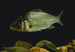
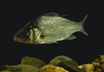

Massachusetts has a reputation for being a "liberal" state. Remarkably, this reputation has survived the recent succession of unpleasantly Republican governors.
Sure, Brahmin Bill Weld, taking a much needed break from being tough on crime and Welfare Moms, did manage to come up with the phrase "a ferret in a Barcalounger." I'll give him credit for that.
When the dilletantish Mr Weld grew weary of governing, his unpleasant lieutenant Governor inherited the job. There was nothing even faintly amusing about Mr Cellucci, who also abdicated the gubernatorial throne and currently is lavishing his scowling, churlish presence north of here as ambassador to Canada. His sidekick, Jane Swift took the helm. Crying, as had all her forbears:
Land ho ! Avast ye lubbers ! Anchors aweigh ! No new taxes !
Let's gloss over the embarrassment of the Jane Swift administration.
Which brings us to pretty boy Mitt, Olympics Man, fresh from the oddly conjoined worlds of Venture Capitalism and the Mormon Church. For the full lowdown, and it is low, on Mr Romney, I direct you to RIAF, one of my favorite political blogs.
(By the way, remember his campaign ads ? The ones in which he pretended to be a Working Class Guy ? Remember how CLEAN the garbage was in the "I Am A Trashman" ad ? )
What I wish to say is this.
Today our state demonstrated a bit of the old liberalism.
The Massachusetts Supreme Judicial Court stated, quite plainly, that to deny single sex couples the right to marry is unconstitutional. They gave our legislature 180 days to accommodate this. To make it happen, basically. They could have gone farther and ordered the plaintiffs to be issued marriage licenses, but they left the implementation to the legislature.
It didn't take Mr Romney long to check in with the usual theocracy-based, homophobic, right-wing-pandering, human-rights violating, antediluvian boilerplate.
"... Gov. Mitt Romney disagreed with the decision, saying that marriage should be an institution between just one man and one woman. He said that he is going to do all he can to stop marriage licenses from going out to nontraditional couples.
Romney said that he will support an amendment to the Massachusetts Constitution that will limit marriage to a man and a woman."
The forces of darkness are gathering. The name of God is being invoked. "Think of the children !" is being screeched. Fred Phelps is making his way eastward. (Think Yeats. Rough beast. Slow thighs.)
But for now let's savor the unfamilar taste of today's progressive moment.
Tuesday, November 18, 2003
Monday, November 17, 2003
Speaking of Escape
"Let's move to Iceland," has been my traditional escapist request to DK. It began with my plan of what to do if George Bush won the election. DK, not a fan of ice, or even of the idea of ice, begged to differ. Suggested Amsterdam as a better expatriate venue for a jazz musician. My Bjork argument didn't wash.
In the midst of my escapist fantasies, I thought of Philip Larkin's poem:
Sometimes you hear, fifth-hand,
As epitaph:
He chucked up everything
And just cleared off
"Poetry of Departures," Philip Larkin
Larkin's poem is about self-loathing, about wanting to escape the heavy, quotidian ennui of one's particular life. The idea of escape is briefly energizing, but the depressive realization comes at the poem's end: what you've escaped into is simply another self-created version of a "reprehensibly perfect" life.
There's an old Latin adage: you change only the sky above your head when you cross the sea.
A part of my attraction to Thomas Merton has taken the form, I think, of identification. The fantasy of becoming him. In the same self-obliterating sense of identifying with a character in a book or in a movie. For a moment, the dense and troubling "I" stops yammering and inhabits a pretty illusion: the contemplative, creative solitary.
It's one of the ways, riddled with bad faith, of chucking up everything and clearing off. Only to find oneself, well, still oneself.
Simone Weil, again: The imagination is constantly filling up the fissures through which grace might pass.
One minute of sitting meditation makes this perfectly clear. At least the "imagination" part. The "grace" is a bigger leap.
There's another poem that refers to escape, psalm 55, a psalm that always astonishes me with its contemporary resonance.
I would hasten to escape
and make my lodging in the wilderness
What is the psalmist escaping ?
violence and strife in the city
trouble and misery in the midst of her
corruption at her heart
oppression and deceit
Circle back, if you will, to my reference to Iceland and George Bush. Misery, corruption, oppression, deceit.
the psalmist goes on to say
For had it been an adversary who had taunted me
then I could have borne it
But it was you, a man after my own heart
my companion, my own familiar friend
And there's the heart of it, where the bitterness of the disappointment lies. How humans, all of us, so capable of selflessness and compassion, bring such violence and strife into the world. Some, of course, more than others.
I read in the paper this morning that Mr Bush had finally commented publically on this last week's carnage in Iraq. He took the opportunity to inform the world that he'd prayed for the dead and their families.
"Today, I spent some time in prayer for our service men and women who are in harm's way,' he said before answering questions. 'I prayed for their families, I prayed for those who are still in harm's way, whether it be American troops or coalition troops."
How can the man who set in motion the chain of events that led to this slaughter now use the carnage as an opportunity to showcase his "Christian" piety ? George, as your first assignment, go read the Sermon on the Mount. Start with this gem from Matthew 6 --
Beware of praticing your piety before others in order to be seen by them...
Then go back and study Chapter 5.
While you're at it, check this prayer out.
No Cliff notes.
And, yes, it will be on the test.
In the midst of my escapist fantasies, I thought of Philip Larkin's poem:
Sometimes you hear, fifth-hand,
As epitaph:
He chucked up everything
And just cleared off
"Poetry of Departures," Philip Larkin
Larkin's poem is about self-loathing, about wanting to escape the heavy, quotidian ennui of one's particular life. The idea of escape is briefly energizing, but the depressive realization comes at the poem's end: what you've escaped into is simply another self-created version of a "reprehensibly perfect" life.
There's an old Latin adage: you change only the sky above your head when you cross the sea.
A part of my attraction to Thomas Merton has taken the form, I think, of identification. The fantasy of becoming him. In the same self-obliterating sense of identifying with a character in a book or in a movie. For a moment, the dense and troubling "I" stops yammering and inhabits a pretty illusion: the contemplative, creative solitary.
It's one of the ways, riddled with bad faith, of chucking up everything and clearing off. Only to find oneself, well, still oneself.
Simone Weil, again: The imagination is constantly filling up the fissures through which grace might pass.
One minute of sitting meditation makes this perfectly clear. At least the "imagination" part. The "grace" is a bigger leap.
There's another poem that refers to escape, psalm 55, a psalm that always astonishes me with its contemporary resonance.
I would hasten to escape
and make my lodging in the wilderness
What is the psalmist escaping ?
violence and strife in the city
trouble and misery in the midst of her
corruption at her heart
oppression and deceit
Circle back, if you will, to my reference to Iceland and George Bush. Misery, corruption, oppression, deceit.
the psalmist goes on to say
For had it been an adversary who had taunted me
then I could have borne it
But it was you, a man after my own heart
my companion, my own familiar friend
And there's the heart of it, where the bitterness of the disappointment lies. How humans, all of us, so capable of selflessness and compassion, bring such violence and strife into the world. Some, of course, more than others.
I read in the paper this morning that Mr Bush had finally commented publically on this last week's carnage in Iraq. He took the opportunity to inform the world that he'd prayed for the dead and their families.
"Today, I spent some time in prayer for our service men and women who are in harm's way,' he said before answering questions. 'I prayed for their families, I prayed for those who are still in harm's way, whether it be American troops or coalition troops."
How can the man who set in motion the chain of events that led to this slaughter now use the carnage as an opportunity to showcase his "Christian" piety ? George, as your first assignment, go read the Sermon on the Mount. Start with this gem from Matthew 6 --
Beware of praticing your piety before others in order to be seen by them...
Then go back and study Chapter 5.
While you're at it, check this prayer out.
No Cliff notes.
And, yes, it will be on the test.
A Stunning Realization
Since my crack-up on 9.27, the world has seemed a darker, more menacing place, inhabited by powerful cars and distracted, careless, even purposefully malicious drivers. All shouting into cell phones.
Yesterday, cowering in the passenger seat beside DK, an extremely careful driver, I realized that it's not going to get any better. Cars will not get fewer, less powerful, slower. Drivers will not become more cautious, more polite, less narcissistically hell-bent on their own itinerary, the world be damned. Cell phone users will not become fewer, more circumspect, less rude. It can only get worse.
The only possibility, it seemed to me, was to leave for less civilized parts. For my Ted Kaczynski cabin in the woods.
I've seen a TV ad lately in which a man is shaving a car. Well, not really shaving -- the elegantly dressed, continental-looking actor is running a sleekly designed, emmollient-dispensing electric razor over the fender of a beautiful, exotic, expensive-looking car. Cut to a close-up of the moisture trailing from the device, and evaporating. The man strokes the car several times. I will leave further deconstruction of this ad to those more schooled in French literary theory than I am. I simply offer it as an example of the fetishiztion of cars. As I offer the David Cronenberg movie as an example of the fetishization of car crashes. And this website as an example of the fetishization of the medical consequences of car crashes.
I had no idea I was such a sex kitten.
Yesterday, cowering in the passenger seat beside DK, an extremely careful driver, I realized that it's not going to get any better. Cars will not get fewer, less powerful, slower. Drivers will not become more cautious, more polite, less narcissistically hell-bent on their own itinerary, the world be damned. Cell phone users will not become fewer, more circumspect, less rude. It can only get worse.
The only possibility, it seemed to me, was to leave for less civilized parts. For my Ted Kaczynski cabin in the woods.
I've seen a TV ad lately in which a man is shaving a car. Well, not really shaving -- the elegantly dressed, continental-looking actor is running a sleekly designed, emmollient-dispensing electric razor over the fender of a beautiful, exotic, expensive-looking car. Cut to a close-up of the moisture trailing from the device, and evaporating. The man strokes the car several times. I will leave further deconstruction of this ad to those more schooled in French literary theory than I am. I simply offer it as an example of the fetishiztion of cars. As I offer the David Cronenberg movie as an example of the fetishization of car crashes. And this website as an example of the fetishization of the medical consequences of car crashes.
I had no idea I was such a sex kitten.
Sunday, November 16, 2003
A Good Word
There's been a recent discussion on and across several blogs I read about acquisitiveness, both literal and informational.
Kurt's mention of the "reading eight books at a time" phenomenon certainly hit home. It reminded me of another recent blog discussion of what books one would grab and flee with in time of war. Some bloggers posted a digital photo of their pile of chosen books.
I discovered this discussion on Joseph Duemer's site, and, after scouring the titles in his photo, had to send off immediately for Barnstone's translations of Wang Wei, which now resides in my pile of "formerly seven now eight books at at time that I am reading."
And, to top that bit of consummated acquisitiveness, I began to hanker after a digital camera so I might post my own photos. Is there no end to desire ? My inner Puritan and inner cheapskate can probably hold the camera at bay. But book lust is a different animal.
Somehow book greed seems less evil. But is it ?
Take the Amazon wish list. I have one. And it pisses me off when the Amazon home page, which, like so much other marketing text, is creepily personalized, waves one of my selections in my face and hisses "You know you want it." Does that strike any one else as lewd ?
Book greed is probably less evil than wanting a new Benz SUV every year, or gold bathroom fixtures, or a half dozen Rolexes.
The truth of it is that I simply can't read eight books at once. I'm sure some people can. But my own "reading eight at once" often devolves to flitting from one to the other in a state of distraction, and reading none of them well, or even at all.
Shall we post photos of our piles of the "eight books we're reading at once" ?

Western History/Genealogy Department, Denver Public Library
Then there are all the other sources of information that Kurt lists -- NPR, BBC, newspaper, internet news, blogs, the movies, netflix, TV, magazines, professional journals -- the list goes on. And then there's music. A whole other universe of, if not information, how shall we put this, important aesthetic input that unscrolls in time.
Because time factors into the dilemma.
I've been, because of a thankfully minor fracture of my second cervical vertebra (in an accident instigated by a driver "distracted" by his cell phone, speaking of failed multi-tasking) been out of work since September 27. My whole sense of time, previously regulated by the hours spent at work, has been altered. I've certainly had more time to read, and am chagrined at how inefficiently I've used it. Maybe having less time forces one to focus more, to spend it more wisely.
Cassandra's words on cleaning out the house and paring down also, literally, hit home. Both DK and I have had, quite recently, elderly relatives who have moved into small, assisted-living quarters. From larger houses crammed with a lifetime of things. The sheer accumulations were frightening to contemplate. The mementos, the bibelots, the knick-knacks, the souvenirs. My Auntie, wisely, ruefully, shook her head and asked "Why did I ever think I needed all those things ?"
To cheat memory, time and death ? We all know how well that project turns out.
My excellent, witty and eloquent (read down to the "diamond of a novella" part) friend, GG, gave me a most wonderful word this week. Syllogomania.
It means "the hoarding of rubbish."
Good word, eh ?
Kurt's mention of the "reading eight books at a time" phenomenon certainly hit home. It reminded me of another recent blog discussion of what books one would grab and flee with in time of war. Some bloggers posted a digital photo of their pile of chosen books.
I discovered this discussion on Joseph Duemer's site, and, after scouring the titles in his photo, had to send off immediately for Barnstone's translations of Wang Wei, which now resides in my pile of "formerly seven now eight books at at time that I am reading."
And, to top that bit of consummated acquisitiveness, I began to hanker after a digital camera so I might post my own photos. Is there no end to desire ? My inner Puritan and inner cheapskate can probably hold the camera at bay. But book lust is a different animal.
Somehow book greed seems less evil. But is it ?
Take the Amazon wish list. I have one. And it pisses me off when the Amazon home page, which, like so much other marketing text, is creepily personalized, waves one of my selections in my face and hisses "You know you want it." Does that strike any one else as lewd ?
Book greed is probably less evil than wanting a new Benz SUV every year, or gold bathroom fixtures, or a half dozen Rolexes.
The truth of it is that I simply can't read eight books at once. I'm sure some people can. But my own "reading eight at once" often devolves to flitting from one to the other in a state of distraction, and reading none of them well, or even at all.
Shall we post photos of our piles of the "eight books we're reading at once" ?
Western History/Genealogy Department, Denver Public Library
Then there are all the other sources of information that Kurt lists -- NPR, BBC, newspaper, internet news, blogs, the movies, netflix, TV, magazines, professional journals -- the list goes on. And then there's music. A whole other universe of, if not information, how shall we put this, important aesthetic input that unscrolls in time.
Because time factors into the dilemma.
I've been, because of a thankfully minor fracture of my second cervical vertebra (in an accident instigated by a driver "distracted" by his cell phone, speaking of failed multi-tasking) been out of work since September 27. My whole sense of time, previously regulated by the hours spent at work, has been altered. I've certainly had more time to read, and am chagrined at how inefficiently I've used it. Maybe having less time forces one to focus more, to spend it more wisely.
Cassandra's words on cleaning out the house and paring down also, literally, hit home. Both DK and I have had, quite recently, elderly relatives who have moved into small, assisted-living quarters. From larger houses crammed with a lifetime of things. The sheer accumulations were frightening to contemplate. The mementos, the bibelots, the knick-knacks, the souvenirs. My Auntie, wisely, ruefully, shook her head and asked "Why did I ever think I needed all those things ?"
To cheat memory, time and death ? We all know how well that project turns out.
My excellent, witty and eloquent (read down to the "diamond of a novella" part) friend, GG, gave me a most wonderful word this week. Syllogomania.
It means "the hoarding of rubbish."
Good word, eh ?
Saturday, November 15, 2003
107

**credit below
How can one read the psalms from the perspective of non-duality ? They are, after all, songs that explore the Man-God relationship. Are they dual/non-dual "like box and lid joining" ? Zen teacher Norman Fischer has produced his own "translations" of the psalms which I find less pleasing than the BCP psalter's wonderful poetry, but the fact that a Zen teacher is drawn to them makes me feel that the question has some intellectual validity.
Today I thought of psalm 107 which I read one morning last summer on our vacation, literally seaside, as DK was off bicycling. It's the one with the famous "down to the sea in ships" line. I was instantly struck by its serial descriptions of various mental and spiritual states. Depression, spiritual accedia, refusal, rebellion -- states familiar to all humans. And all are resolved, anaphorically, as follows:
Then they cried to the Lord in their troubles
and he delivered them from their distress
There are four sections. The middle two posit "rebellion" as the cause of the distress. But the first simply describes wanderers:
Some wandered in desert wastes
they found no way to a city where they might dwell
they were hungry and thirsty
their spirits languished within them
These are the exiles, the homeless ones, the alienated, the marginal. The people who find no sustenence in what the Usual City offers: mindless work, ceaseless consumption of goods and entertainments, competition for wealth and recognition and power, visual ugliness, moral lowness, spiritual crassness and mendacity. Wherever they are within this city, it is a desert. Or, perhaps, they have sought a literal desert, turned away, self-exiled, turned outwardly eremitical, sought inner emptiness. They are the blessedly empty ones of the beatitudes, the hungry and thirsty who are fed by the plenum of true emptiness.
form is emptiness, emptiness is form
The next group of the afflicted have rebelled against the "word" of God. One could read them as literal law-breaking prisoners, enjoying what our former Governor, the reactionary William Weld, once called, prescriptively, "the joy of busting rocks." I read them as depressed, as refusing, as self-enclosed, withdrawn, disconnected. Bartlebies, preferring not to. How is this against the "word of God" ? I hear "word of God" as more "nature of things," or the Way, the Tao. In denying or rejecting one's connection with the web of existence, one becomes as the psalmist describes:
Some sat in darkness and deep gloom
bound fast in misery and iron
because they rebelled against the word of God
...
so he humbled their spirits with hard labor.
In such a state, everything becomes "hard labor." The body itself seems leaden. Thinking is an effort. As GM Hopkins said, "Self-yeast of spirit a dull dough sours." If one of the Three Kilesas is operative, it is hatred. Rejection. Pushing away.
The third group are also rebels, but of a different sort.
Some were fools and took to rebellious ways
They were afflicted because of their sins
They abhorred all manner of food
And drew near to death's door
"Fools" and "rebellious ways" imply more active deviation from the Word, or from the Way. These sinners become "afflicted" unto "death," unable to take in that which is essential for life, be it literal nourishment, or figurative. Perhaps what they HAVE taken in has made them ill, nauseated, self-disgusted. Greed leading to hatred. All for delusion's sake: this will make me strong, wealthy, important, holy, powerful.
Finally, we have the last group, and, to my reading, the strangest. On the face of it, they are honest workmen going about their business, recognizing the "works of the Lord/and his wonders"
Some went down to the sea in ships
and plied their trade in deep waters
They beheld the works of the Lord
and his wonders in the deep
when suddenly a huge, God-inflicted storm overtakes them, and they are in tremendous peril and fear.
Who are these people ? Church-going citizens, productive, law-abiding, religious, good -- complacent people. People going through the spiritual motions, half-asleep. Vaguely comforted by their religion, unquestioning. Then, suddenly, they are up-ended, rocked to their depths by existential peril of the most harrowing kind.
Each of these four groups, in extremis, "cry to the Lord in their troubles," and are "delivered."
There it is again -- the "appeal," the great "de profundis" cry that Christianity articulates so brilliantly.
I think that in the crying out, in that moment of awful submission and recognition of one's fundamental, naked afflicted reality, in that excruciating moment, is where deliverance begins.
**www.metmuseum.org
Artist/Maker William Bradford (1823–1892) Title/Object Name Shipwreck off Nantucket (Wreck off Nantucket after a Storm) Date ca. 1860–61 Medium Oil on canvas Dimensions 40 x 64 in. (101.6 x 162.6 cm) Credit Line (Accession No.) Purchase, John Osgood and Elizabeth Blanchard Memorial Fund, Fosburgh Fund Inc. Gift, and Maria DeWitt Jesup Fund, 1971 (1971.192)
Friday, November 14, 2003
Avuncular

Workers' Houses, Lowell, Massachusetts
Jack Delano, Library of Congress LC-USF34- 042897-D
My Lithuanian uncle, Peter, who died a few years ago, was a passionate logophile and letter-to-the-editor writer. A classic autodidact. Over the years the Lawrence Eagle-Tribune published hundreds of his letters; he clipped them all and kept them in neat, chronological binders. His topics ranged from nature to politics. After his death, DK and I scanned and typed them into computer files and printed them up for his widow, my aunt.
One of his letters, an anecdote from his impoverished youth in Lowell, Massachusetts, inspired the following poem.
Oni
for Peter
The boy, stumbling in a root-bound meadow,
is looking for oni. Birds decant
thick, gold gouts of melody
into the raw throat of the air.
Get oni, his Ma said. Oni.
Oni for his tonsillar sister.
He tongues and tongues the queer lozenge.
Oni buzzes among his buds.
No doctor would brave the river’s breath,
his mother, her miasmas of hair,
her spoons. She knew poison
when she saw it. She saw it everywhere,
bound her head in rags, gargled beet, leek, horse-
radish, viski against it. But oni was medus,
sweet. Was medicine, antidote.
He knows the taste of medus. LeDoux
doesn’t. Oni oni ? Oignons ? Dans un apothecaire ?
Blunt retorts, flasks of aqua-aqua, sachets, pastilles
and pestles mock him to the sidewalk,
and there she is, waiting for him, Lune de Miel.
Oni, he begs. She waxes sideways
undulant, laughing soit qui mal y pense,
naughty garon, tes penses t’empoisonnent.
He flees. He knows all her names.
Menusis, wafering the night’s tongue.
Loon’s song, menstrual sister,
mill, looming the Merrimack,
to a fallen stole of moonlight and brick.
Sundays the Cardinal intones Methuselah !
Lunatic, they whisper, pointing at Ma.
Medusa, says his sister, pointing at snakes.
Sanctuary, the boy prays, Oni,
and genuflects into the baznytele
where the grocer, Paterson, officiates
behind an immaculate countertop.
His apron’s a pentecost of daily blood.
Eat, my child, bids Paterson, and drink.
Accept the motley sacrament of speech.
For you the world has fallen into word,
as sin and sacrifice. Spread this good news.
And with two hands he lifts and consecrates
a jar inscribed with clover, hives and bees,
their heads thrust deep in purple, calyxed froth,
sounding for nectar, stigmata, oni.
Bells spritz. The boy rejoices, tingling.
He’s found his medus, his mead, his Oni grail,
the honey soit qui miel y pense where word
and world both lie, sweet nothings, on the tongue.
Notes From the Lost Vegan
As a vegan, I believe that



should not be transformed into
 and
and 
(photos:USDA)
A vegan strives to respect animals as fellow creatures by using them as little as possible. This extends to animal by-products in cosmetics, food and household products. Veganism goes further than vegetarianism by avoiding eggs and milk, both for the theoretical notion of non-usage/exploitation, and for the painful factory farm conditions under which hens and dairy cows must exist. We avoid leather, wool, silk and honey as well. As I've said elsewhere, I am not a perfect vegan: peppermint life savers, and mainstream toothpaste, shampoo and laundry detergent are my secret vices. And I'm working on the peppermints.
Dennis Kucinich rocks. (He is a vegan.)
A friend said, facetiously, that I should not vote for someone so elvish. (As in elf, not Presley, who is, come to think of it, the Anti-Vegan.)
But don't you think Joe Lieberman's got a way more elfen face than Dennis ?

Speaking of the Democrats.
There are more than several things about Dr Dean that ANNOY me. He likes GUNS. He will not use the word "marriage" with respect to gay unions.
And, for goodness sakes, he was on that silly HBO infopolitocodramadocutainment piece of crap, "K Street," (we watched it once, nearly got TMJ from the jaw droppingness of it) a series that links real-life pundits, politicians and current events with fictional actors and soap opera story lines in a vile compote of ludicracy, narcissism, and general degradation of the national conversation.
If you try to tell me it's "edgy" -- let's just leave it at don't even try. That word has become the excuse for all that's vulgar, exploitative, loud and demeaning about our culture. I don't buy it, and all the other stuff it's selling.
C'mon, Doctor Dean. Give us a serious break here. I mean REALLY !
I would like to like Kerry.
I would love to vote for Kucinich.
I could vote for Dean. He might be annoying, but unlike the current unelected resident of the White House, he is not sanctimonious, mendacious, incurious, inarticulate, unintelligent, deluded, greedy, bellicose, simple-mindedly manichean, dangerous, or evil.
I've left out a lot of modifiers, but you get the picture.

should not be transformed into
and
(photos:USDA)
A vegan strives to respect animals as fellow creatures by using them as little as possible. This extends to animal by-products in cosmetics, food and household products. Veganism goes further than vegetarianism by avoiding eggs and milk, both for the theoretical notion of non-usage/exploitation, and for the painful factory farm conditions under which hens and dairy cows must exist. We avoid leather, wool, silk and honey as well. As I've said elsewhere, I am not a perfect vegan: peppermint life savers, and mainstream toothpaste, shampoo and laundry detergent are my secret vices. And I'm working on the peppermints.
Dennis Kucinich rocks. (He is a vegan.)
A friend said, facetiously, that I should not vote for someone so elvish. (As in elf, not Presley, who is, come to think of it, the Anti-Vegan.)
But don't you think Joe Lieberman's got a way more elfen face than Dennis ?
Speaking of the Democrats.
There are more than several things about Dr Dean that ANNOY me. He likes GUNS. He will not use the word "marriage" with respect to gay unions.
And, for goodness sakes, he was on that silly HBO infopolitocodramadocutainment piece of crap, "K Street," (we watched it once, nearly got TMJ from the jaw droppingness of it) a series that links real-life pundits, politicians and current events with fictional actors and soap opera story lines in a vile compote of ludicracy, narcissism, and general degradation of the national conversation.
If you try to tell me it's "edgy" -- let's just leave it at don't even try. That word has become the excuse for all that's vulgar, exploitative, loud and demeaning about our culture. I don't buy it, and all the other stuff it's selling.
C'mon, Doctor Dean. Give us a serious break here. I mean REALLY !
I would like to like Kerry.
I would love to vote for Kucinich.
I could vote for Dean. He might be annoying, but unlike the current unelected resident of the White House, he is not sanctimonious, mendacious, incurious, inarticulate, unintelligent, deluded, greedy, bellicose, simple-mindedly manichean, dangerous, or evil.
I've left out a lot of modifiers, but you get the picture.
Thursday, November 13, 2003
Spleen
Dysphoria, dressed up as Baudelarian Spleen, leads one to certain poets.
I began with Philip Larkin, searching out "Church Going," thinking of my own impulse to go into a church, and found the line
A serious house on serious earth it is
Yes, one can say that. It requires no leap of faith, no assumptions of transcendence, no fears of engaging in mauvais foi.
Then I found "Aubade," an insomniac's fitful and harrowed timor mortis, ending with morning, the workaday distractions resuming,
The sky is white as clay, with no sun.
Work has to be done.
Postmen like doctors go from house to house.
My dysphoria thus fueled, I turned to my favorite poem in this genre, Weldon Kees' "Equinox."
The setting is Northern, cold, winter. A "sequestered and snow-haunted world." An ancient, half-blind, dementing Spanish woman sits in a "claw-and-ball-foot chair" at a "frozen window" overlooking a bay. The world itself could be ending -- there are abandoned boats, dead fish on the shore, a few last corroding cans of beans on her shelf, a village whose chimneys no longer emit smoke, cottages where "no lights burn."
...Exile without remembrance,
spawned in the heat to perish in this cold,
Ravaged by paresis, and her sight at last
A blackness in the blood, she moves her chair
Inch by excruciating inch, her face
steered -- raw, blank, aching -- toward the beans:
The last survivor of the race.
Phew. That cuts us down to size, huh ? Reduced to blind appetite in a dying world.
Notice the irony of the title.
I wrote a poem about Kees in 1998. I'd written a book-length series called QABEN, ostensibly "about" the flooding of a central Massachusetts valley in the 1930's to form our "Quabbin Reservoir," but more about other historical obliterations, and watery purifications. I included in it homage to three poets: Berryman, Kees and Crane, all of who jumped to their water or not-water deaths from various rails -- Berryman off a bridge onto dry ground, Kees probably from the Golden Gate, and Crane off the side of a cruise ship into the sea. There are pictures of each of these men in their youth in their biographies in which, gaunt and mustachioed, they eerily resemble one another. Especially Crane and Kees.
I did massive reaearch for QABEN, including a hard-hatted tour of Boston Harbor's brand new Deer Island sewage treatment plant. (A logical and symmetrical end point for a series about drinking water, eh ?) Deer Island had been the site of a Native American concentration camp during King Philip's War, and subsequently of poorhouses, quarantine hospitals, orphanages and prisons. Finally, sewage treatment: the ultimate institution of "purification."
Here's my Kees poem, and its footnote.
7.18.55
Small wonder... /...that the sleuth, LeRoux, is now incurably insane
-- W. Kees, “Crime Club”
At wits’ extreme, they summoned old LeRoux
from Langley Porter’s chronic, chronic ward.
A month of Thorazine had done what years
of depth analysis and shock could not:
had stopped his screams. It was something, anyway.
His trench coat gave off mildew, naphthalene.
-- Where are we going , please ? He winced and blinked
as dull green tile gave way to dull green air.
-- 1980 Filbert, Sir. Get in.
No nut joke passed the rookie driver’s lips.
He’d been forewarned. He’d heard of Jack LeRoux,
the crackerjack dick who’d cracked in ‘28.
They say each sleuth shall meet his waterloo,
his sinkhole of unfathomable clues.
His was the Potato Masher case. Jeez,
if the guy had been a bit more patient !
The door-to-door utensils man confessed
to everything -- the Shirley Temple con,
the sporting goods swindle, the death blow.
And now the reborn necromancer swayed
in the squad car’s back seat -- Excuse me,
officer, would you mind, the siren ? Please ?
The long-lost broken wavelets tugged at him
as they withdrew. He sighed. Just like old times --
the car abandoned by the Golden Gate.
The fog. No note. The cat called Lonesome gone.
The small apartment, festooned in yellow tape.
Red socks soaking in the bathroom sink.
On the kitchen floor, one dish of milk
curdling. Most of the Jack Daniels left.
Sheet music on the piano, blues. Bedside,
Unamuno’s Tragic Sense Of Life,
Dostoevsky’s The Devils. LeRoux sneezed.
They handed him the transcripts, interviews --
the usual friends, in grief’s confessional,
recalling clues they’d lost, pooh poohed, ignored.
“I think Hart Crane had the right idea.”
“I couldn’t get my foot over the rail.”
“I may go to Mexico. To stay.”
“What keeps you going ?” “Things are pretty bad.”
“Nobody seems to be doing anything.”
“I won’t.” “I won’t.” -- And then he curveshipped out,
is that it ? Shrill shirt ballooning like a sail ?
Posterity will have him puttering
into his dotage in some hacienda,
or dead, and that’s the warble of it, men --
the bathers leave the water, their smiles fade,
the roof opens to one last monstrous flood,
and I, I must be getting back. It’s time
for medication, hydrotherapy
and supper, beans tonight I think. I like
baked beans. Spaghetti. Chocolate milk. Pie.
Tuesday’s television night. Wednesday’s crafts.
I’m doing better lately. It’s so strange.
(The poet Weldon Kees disappeared on 7.18.55. His car was found near the Golden Gate Bridge. Langley Porter is a famous psychiatric hospital in San Francisco. Details in stanzas 5-7 are from Robert Knoll’s Weldon Kees and the Mid Century Generation, Letters 1935-1955. “7.18.55” contains references to three of Kees’ poems -- “Crime Club,” and, in the last 2 lines, “The Smiles Of The Bathers” and “If This Room Is Our World.” The baked beans and spaghetti are borrowed from “Equinox,” to me, one of Kees most disturbing poems. “Curveship” and “shrill shirt ballooning,” are, of course, from Hart Crane’s “The Bridge.” )
I began with Philip Larkin, searching out "Church Going," thinking of my own impulse to go into a church, and found the line
A serious house on serious earth it is
Yes, one can say that. It requires no leap of faith, no assumptions of transcendence, no fears of engaging in mauvais foi.
Then I found "Aubade," an insomniac's fitful and harrowed timor mortis, ending with morning, the workaday distractions resuming,
The sky is white as clay, with no sun.
Work has to be done.
Postmen like doctors go from house to house.
My dysphoria thus fueled, I turned to my favorite poem in this genre, Weldon Kees' "Equinox."
The setting is Northern, cold, winter. A "sequestered and snow-haunted world." An ancient, half-blind, dementing Spanish woman sits in a "claw-and-ball-foot chair" at a "frozen window" overlooking a bay. The world itself could be ending -- there are abandoned boats, dead fish on the shore, a few last corroding cans of beans on her shelf, a village whose chimneys no longer emit smoke, cottages where "no lights burn."
...Exile without remembrance,
spawned in the heat to perish in this cold,
Ravaged by paresis, and her sight at last
A blackness in the blood, she moves her chair
Inch by excruciating inch, her face
steered -- raw, blank, aching -- toward the beans:
The last survivor of the race.
Phew. That cuts us down to size, huh ? Reduced to blind appetite in a dying world.
Notice the irony of the title.
I wrote a poem about Kees in 1998. I'd written a book-length series called QABEN, ostensibly "about" the flooding of a central Massachusetts valley in the 1930's to form our "Quabbin Reservoir," but more about other historical obliterations, and watery purifications. I included in it homage to three poets: Berryman, Kees and Crane, all of who jumped to their water or not-water deaths from various rails -- Berryman off a bridge onto dry ground, Kees probably from the Golden Gate, and Crane off the side of a cruise ship into the sea. There are pictures of each of these men in their youth in their biographies in which, gaunt and mustachioed, they eerily resemble one another. Especially Crane and Kees.
I did massive reaearch for QABEN, including a hard-hatted tour of Boston Harbor's brand new Deer Island sewage treatment plant. (A logical and symmetrical end point for a series about drinking water, eh ?) Deer Island had been the site of a Native American concentration camp during King Philip's War, and subsequently of poorhouses, quarantine hospitals, orphanages and prisons. Finally, sewage treatment: the ultimate institution of "purification."
Here's my Kees poem, and its footnote.
7.18.55
Small wonder... /...that the sleuth, LeRoux, is now incurably insane
-- W. Kees, “Crime Club”
At wits’ extreme, they summoned old LeRoux
from Langley Porter’s chronic, chronic ward.
A month of Thorazine had done what years
of depth analysis and shock could not:
had stopped his screams. It was something, anyway.
His trench coat gave off mildew, naphthalene.
-- Where are we going , please ? He winced and blinked
as dull green tile gave way to dull green air.
-- 1980 Filbert, Sir. Get in.
No nut joke passed the rookie driver’s lips.
He’d been forewarned. He’d heard of Jack LeRoux,
the crackerjack dick who’d cracked in ‘28.
They say each sleuth shall meet his waterloo,
his sinkhole of unfathomable clues.
His was the Potato Masher case. Jeez,
if the guy had been a bit more patient !
The door-to-door utensils man confessed
to everything -- the Shirley Temple con,
the sporting goods swindle, the death blow.
And now the reborn necromancer swayed
in the squad car’s back seat -- Excuse me,
officer, would you mind, the siren ? Please ?
The long-lost broken wavelets tugged at him
as they withdrew. He sighed. Just like old times --
the car abandoned by the Golden Gate.
The fog. No note. The cat called Lonesome gone.
The small apartment, festooned in yellow tape.
Red socks soaking in the bathroom sink.
On the kitchen floor, one dish of milk
curdling. Most of the Jack Daniels left.
Sheet music on the piano, blues. Bedside,
Unamuno’s Tragic Sense Of Life,
Dostoevsky’s The Devils. LeRoux sneezed.
They handed him the transcripts, interviews --
the usual friends, in grief’s confessional,
recalling clues they’d lost, pooh poohed, ignored.
“I think Hart Crane had the right idea.”
“I couldn’t get my foot over the rail.”
“I may go to Mexico. To stay.”
“What keeps you going ?” “Things are pretty bad.”
“Nobody seems to be doing anything.”
“I won’t.” “I won’t.” -- And then he curveshipped out,
is that it ? Shrill shirt ballooning like a sail ?
Posterity will have him puttering
into his dotage in some hacienda,
or dead, and that’s the warble of it, men --
the bathers leave the water, their smiles fade,
the roof opens to one last monstrous flood,
and I, I must be getting back. It’s time
for medication, hydrotherapy
and supper, beans tonight I think. I like
baked beans. Spaghetti. Chocolate milk. Pie.
Tuesday’s television night. Wednesday’s crafts.
I’m doing better lately. It’s so strange.
(The poet Weldon Kees disappeared on 7.18.55. His car was found near the Golden Gate Bridge. Langley Porter is a famous psychiatric hospital in San Francisco. Details in stanzas 5-7 are from Robert Knoll’s Weldon Kees and the Mid Century Generation, Letters 1935-1955. “7.18.55” contains references to three of Kees’ poems -- “Crime Club,” and, in the last 2 lines, “The Smiles Of The Bathers” and “If This Room Is Our World.” The baked beans and spaghetti are borrowed from “Equinox,” to me, one of Kees most disturbing poems. “Curveship” and “shrill shirt ballooning,” are, of course, from Hart Crane’s “The Bridge.” )

Wednesday, November 12, 2003
Corn Finale
Section 7 is just too awful, too idiosyncratically and obscurely autobiographical, to post. The grand finale degenerates into vaudeville. I'll let Anita do the dirty work.
Incarnation Breakfast
This is Paula's House of Corn signing off for the evening.
Incarnation Breakfast
This is Paula's House of Corn signing off for the evening.
Corn 5 & 6
These are my favorite sections. The speaker descends into the underworld and becomes Marcelle's lover. If I were a better poet, vi. might remind one of Peter Greenaway's The Pillow Book, or the Andiessen opera, Writing to Vermeer, for which he wrote the libretto, and which we had the unsurpassed privilege of seeing in New York in 2000.
v. And Down
Can amaranth and asphodel
Bring merrier laughter to your eyes?
In the rusting kitchens of Dis
the clocks have ankylosed at three,
curtains sag, glass clouds, cookbooks dog-
ear in the dampness
and the only time is borrowed from above,
a trickle-down, a leach,
an equinoctal tick and tock
of birth and death, barely audible,
corrosive as a midnight drip drip drop.
This is a humid hell,
not drily Catholic but wet enough
to nurse chlorotic tracts of asphodel,
the only native crop, perennial,
that, taproots to brimstone, incandesce,
while surplus crates of pomegranate, corn,
rot all winter on the docks at Styx.
I have come to find you, chre Marcelle.
Greensick from the crossing,
Orpheus in Orphan Annie drag,
I’ll search the riverside ladies’ hotel,
our old resort, offseason rates year round.
It’s always winter somewhere, after all,
or about to be, if not for us,
for the antipodal sisters that we pass,
white sandals rising, black oxfords toeing down.
Against house rules, I prowl the corridors
and eavesdrop on the locked-behind-closed-doors
monodies -- the hiss of steam,
the hush of seething, simmering,
the caged bump of boiling,
the votive silence of the chafing dish,
the clandestine shhhhh
of pressure cookers creeping toward the red --
until I hear Don’t go, don’t go, don’t go
a louche arrangement of a standard blues,
Victrola-thin, in smoky 78,
but recognizable, instantly, as yours.
Shy, I knock. Shyer, you let me in.
vi. Love Song
Marcelle, you are word fallen into flesh.
From your mouth, I swallow paper pulp.
from your breasts, a let-down draught of ink,
from between your labia, dark red
oxide rivulets. By now the stove’s
blue haloes have annealed your fingertips
to chalk and charcoal. Love, I offer you
my back’s stretched vellum, the parchment of my breasts.
Our fallen flesh will sublimate to word.
v. And Down
Can amaranth and asphodel
Bring merrier laughter to your eyes?
In the rusting kitchens of Dis
the clocks have ankylosed at three,
curtains sag, glass clouds, cookbooks dog-
ear in the dampness
and the only time is borrowed from above,
a trickle-down, a leach,
an equinoctal tick and tock
of birth and death, barely audible,
corrosive as a midnight drip drip drop.
This is a humid hell,
not drily Catholic but wet enough
to nurse chlorotic tracts of asphodel,
the only native crop, perennial,
that, taproots to brimstone, incandesce,
while surplus crates of pomegranate, corn,
rot all winter on the docks at Styx.
I have come to find you, chre Marcelle.
Greensick from the crossing,
Orpheus in Orphan Annie drag,
I’ll search the riverside ladies’ hotel,
our old resort, offseason rates year round.
It’s always winter somewhere, after all,
or about to be, if not for us,
for the antipodal sisters that we pass,
white sandals rising, black oxfords toeing down.
Against house rules, I prowl the corridors
and eavesdrop on the locked-behind-closed-doors
monodies -- the hiss of steam,
the hush of seething, simmering,
the caged bump of boiling,
the votive silence of the chafing dish,
the clandestine shhhhh
of pressure cookers creeping toward the red --
until I hear Don’t go, don’t go, don’t go
a louche arrangement of a standard blues,
Victrola-thin, in smoky 78,
but recognizable, instantly, as yours.
Shy, I knock. Shyer, you let me in.
vi. Love Song
Marcelle, you are word fallen into flesh.
From your mouth, I swallow paper pulp.
from your breasts, a let-down draught of ink,
from between your labia, dark red
oxide rivulets. By now the stove’s
blue haloes have annealed your fingertips
to chalk and charcoal. Love, I offer you
my back’s stretched vellum, the parchment of my breasts.
Our fallen flesh will sublimate to word.
Corn 4
In the 4th section, we meet the speaker's mother, who adds her own memories of Marcelle's life.
iv. Out
shame shame sugar shame
everybody knows your name
The tenderest language, mutinously gay,
says yellow clover for lover, for cover
as A Wellesley marriage and corn also speak
in code. My mother remembers Marcelle,
and her tumor, remembers how Marcelle
wouldn’t let the doctors take it out,
so it grew and grew
until she looked nine months pregnant,
and it killed her in the end,
oh it was such a shame,
and the babies were a shame, too,
Marcelle kept losing them, mis-
carrying them, all of them,
and mornings she’d throw herself
in front of the door, crying
don’t go don’t go don’t go,
my mother remembers that, too, the fat woman
on the floor, crying don’t go don’t go,
as Jim stepped around her,
and slipped out.
When I was 13,
and asked my mother about boys, and kissing,
she said don’t worry, someday you’ll understand,
someday you’ll like it she didn’t mention
the elemental, irreducible, unencoded
pleasure the body contains,
and, that night, at dinnertime, decried
my boardinghouse reach
the upset glass
the shameful spill
the good tablecloth stained
with something that would never come out.
iv. Out
shame shame sugar shame
everybody knows your name
The tenderest language, mutinously gay,
says yellow clover for lover, for cover
as A Wellesley marriage and corn also speak
in code. My mother remembers Marcelle,
and her tumor, remembers how Marcelle
wouldn’t let the doctors take it out,
so it grew and grew
until she looked nine months pregnant,
and it killed her in the end,
oh it was such a shame,
and the babies were a shame, too,
Marcelle kept losing them, mis-
carrying them, all of them,
and mornings she’d throw herself
in front of the door, crying
don’t go don’t go don’t go,
my mother remembers that, too, the fat woman
on the floor, crying don’t go don’t go,
as Jim stepped around her,
and slipped out.
When I was 13,
and asked my mother about boys, and kissing,
she said don’t worry, someday you’ll understand,
someday you’ll like it she didn’t mention
the elemental, irreducible, unencoded
pleasure the body contains,
and, that night, at dinnertime, decried
my boardinghouse reach
the upset glass
the shameful spill
the good tablecloth stained
with something that would never come out.
Corn 3
Part 3 of the corn series was inspired by the statue outside of Bates Hall at Wellesley College, my freshman dorm. My memory had radically oversimplified it as a solid, upright ear of corn. Bates Hall was named for Katherine Lee Bates, Wellesley professor, best known as writer of the words to "America the Beautiful."
In the spirit of poetic research, I took a drive to Wellesley and sought out the statue, discovering it was called Persephone and was made by John Rood in 1952, the year i was born. In fact it is slightly cob shaped, but hollowed out, its inscape being the form of a woman. It's covered not with monotonous kernals, but with a freize of animals, flowers and fruits.
The mythic Persephone/Demeter connection delighted me, of course, as did the fact of Professor Bates' "Boston Marriage" to Katherine Coman; Yellow Clover is the title of a collection of poignant love poems Bates wrote after her dear partner died of breast cancer.
The poem embellishes on the themes of sexuality and hunger begun in the first two sections.
iii. Persephone, John Rood, 1952
So it began,
This vagabond, unvalued yellow clover,
To be our tenderest language.
Katherine Lee Bates, “The Yellow Clover”
In memory, a concrete ear of corn,
solid and blunt as Balthus’ The Kiss,
had supplanted John Rood’s Persephone
outside Bates Hall, my old Freshman dorm.
In fact, Rood’s sculpture is an ovate bud
that tapers skyward from a broad calyx,
a gynoid archway cut in each of its four faces,
and defines a hollow which is the absent daughter
in typical hourglass, but more hip than breast,
with a head like a pip or a teat -- overall,
more Priapus than Willendorf, each buttress
sprouting a low relief straight from Katherine Lee’s
amber grain waves and fruit plains. Days’-eyes,
wheat ears, clover, corms and leaves bed
a squirrel, a mulish hare and two birds, not
my memory’s cobblestone tracts of kernals,
but a regular Byzantium of fertility,
burgeoning from limestone. I was that hole.
Someday, they crooned, my Dis would come,
spurting his spiked grenadine. So I battened.
Bread, butter, jam, rags, words -- I stuffed my chinks
until I swelled, a purple apoplectic majesty,
and my skin split. Wait. I’d show that hole.
I’d become what nature most abhors,
a paragon of emptiness, an underworld
where corn can only freeze or salt the tongue,
where the corn mother burns in effigy
for the witchy corn she pillrolls from her flesh,
where the corn maiden retreats across a ground
of neither brimstone nor springtime,
toward nothing she can ever know.
Now, an aging Birkenstocked alum,
I have returned to fact-check for a poem
about the hole occulted in the flesh
about the hole inside a swarm of words,
about a heroine, a revenant,
who climbs Bates’ hill, looks furtively around,
slips into Rood’s hollow, a perfect fit,
incants the lost close sesame and waits
for ranks of seed to ratchet into place.
In the spirit of poetic research, I took a drive to Wellesley and sought out the statue, discovering it was called Persephone and was made by John Rood in 1952, the year i was born. In fact it is slightly cob shaped, but hollowed out, its inscape being the form of a woman. It's covered not with monotonous kernals, but with a freize of animals, flowers and fruits.
The mythic Persephone/Demeter connection delighted me, of course, as did the fact of Professor Bates' "Boston Marriage" to Katherine Coman; Yellow Clover is the title of a collection of poignant love poems Bates wrote after her dear partner died of breast cancer.
The poem embellishes on the themes of sexuality and hunger begun in the first two sections.
iii. Persephone, John Rood, 1952
So it began,
This vagabond, unvalued yellow clover,
To be our tenderest language.
Katherine Lee Bates, “The Yellow Clover”
In memory, a concrete ear of corn,
solid and blunt as Balthus’ The Kiss,
had supplanted John Rood’s Persephone
outside Bates Hall, my old Freshman dorm.
In fact, Rood’s sculpture is an ovate bud
that tapers skyward from a broad calyx,
a gynoid archway cut in each of its four faces,
and defines a hollow which is the absent daughter
in typical hourglass, but more hip than breast,
with a head like a pip or a teat -- overall,
more Priapus than Willendorf, each buttress
sprouting a low relief straight from Katherine Lee’s
amber grain waves and fruit plains. Days’-eyes,
wheat ears, clover, corms and leaves bed
a squirrel, a mulish hare and two birds, not
my memory’s cobblestone tracts of kernals,
but a regular Byzantium of fertility,
burgeoning from limestone. I was that hole.
Someday, they crooned, my Dis would come,
spurting his spiked grenadine. So I battened.
Bread, butter, jam, rags, words -- I stuffed my chinks
until I swelled, a purple apoplectic majesty,
and my skin split. Wait. I’d show that hole.
I’d become what nature most abhors,
a paragon of emptiness, an underworld
where corn can only freeze or salt the tongue,
where the corn mother burns in effigy
for the witchy corn she pillrolls from her flesh,
where the corn maiden retreats across a ground
of neither brimstone nor springtime,
toward nothing she can ever know.
Now, an aging Birkenstocked alum,
I have returned to fact-check for a poem
about the hole occulted in the flesh
about the hole inside a swarm of words,
about a heroine, a revenant,
who climbs Bates’ hill, looks furtively around,
slips into Rood’s hollow, a perfect fit,
incants the lost close sesame and waits
for ranks of seed to ratchet into place.
Pater Pater Pater Noster
My father, Raul Stanati, when he was somewhat younger than I am now, underwent a radical transformation. The ambitious, worldly, hard-driving, controlling over-achiever became a quiet, accepting, peaceful and spiritual man. It was not an overnight transformation, but it was not gradual either. It took my mother by surprise. It began with meditation. He used a non-denominational, body-focused concentration technique. I bore tremendous fruit in his life. He changed careers -- from administrator to hypnotherapist. He believes in reincarnation, and, in addition to the more traditional therapeutic uses of hypnosis, has taken people on past-life regressions.
My first serious beau, the Reverand, whom I met in 1969, was a bitterly-lapsed, working-class, Irish-Catholic Marxist. He was politically passionate, atheistic, under-educated, angry, needy and dysfunctional. A lot older than me, too. When we parted ways in 1978 he was living in a basement apartment in a local suburb, and driving a truck. Three or four years ago he contacted me through a letter to my parents' house. He was still living in the same place, and still working at the same job. The letter was full of allusions to mystical, native-American, forest-based experiences, encounters with numinous beings, ineffable contacts about which he was desperate to inform me for the good of my soul. We met for breakfast. It was terribly strange and awkward. I repeatedly refused to be "proselytized," my defensive word, about his experiences, afraid that they might be symptoms of psychosis. He said he could not invite me to his apartment, alluding to the untidy "stacks of newspapers" that apparantly filled it. His final letter to me alluded to an impending retreat into a Buddhist monastery, told me he would trouble me no further with letters, and furnished me his social security number "in case I ever needed to contact him."
I was in psychoanalysis for a number of years, initially sent to a shrink when, two weeks into medical school, I proposed quitting. (Raul Stanati, in his over-bearing days, was very interested in my becoming an MD.) I ended up with a wonderful doctor, a Columbia-trained, Harvard affiliated Freudian analyst, who, in my paper journals, I always called "The Alienist." We did vis-a-vis psychotherapy for several years, then I graduated to the couch and free association. This and he became the absolute center of my life for several years. It was an undeniably powerful and valuable experience. With a fabulous and quasi-mythic Dad like Raul Stanati, it was little wonder the transference was intense. Under the spell of it, I “acted out” and entered a psychiatry residency in the Midwest, a totally inappropriate, even nutso move, that turned out disastrously. Within months I fled home, then jumped back into another hastily-resumed, ill-thought-out and inappropriate residency, then married a tremendously incompatible fellow, then got “accidentally” pregnant, left residency short of completion, and, of course, went back to the Alienist. In 1985, when I’d just encountered Vipassana meditation, he sent me to an EST-like workshop. I didn’t do much serious meditating then, but it was a taste. The workshop was simply weird/wierd; later I came to consider the facilitator and the process to be, well, rather fascistic. After a divorce and a marvelously right remarriage to DK, love-o-my-life, I went back to finish residency, and the Alienist, again ever-faithful, saw me for a series of sessions of supportive therapy. It helped me through a very stressful two years. He never billed me for the sessions. He once said that, if I chose, I could donate to his Foundation. He, you see, had a new interest. The Alienist, my “Alienist,” had become, well, actually, a literal alienist. As in alien abductions. Recalled under hypnosis. I could not bring myself to donate, as grateful as I was for his meticulous and professional help.
As an act of great mischief, I later took Raul Stanati to a lecture the Alienist was giving on his new field of investigation. It was right up Raul’s alley, actually. But my agenda was was more Freudian: to get my real Father to meet my Transferential Father. They did, and shook hands. It was an orobourotic moment. The Alienist, even in his new incarnation, seemed to appreciate the Oedipal (Electral?) symmetry of that handshake. I looked on, bemused.
In that moment, the transference had been finally resolved. The play was over, the masks were off. Dad was Dad, Dr X was Dr X. The Rev was the Rev. All on their own paths, none on paths I could follow.
It's time to find my own path.
My first serious beau, the Reverand, whom I met in 1969, was a bitterly-lapsed, working-class, Irish-Catholic Marxist. He was politically passionate, atheistic, under-educated, angry, needy and dysfunctional. A lot older than me, too. When we parted ways in 1978 he was living in a basement apartment in a local suburb, and driving a truck. Three or four years ago he contacted me through a letter to my parents' house. He was still living in the same place, and still working at the same job. The letter was full of allusions to mystical, native-American, forest-based experiences, encounters with numinous beings, ineffable contacts about which he was desperate to inform me for the good of my soul. We met for breakfast. It was terribly strange and awkward. I repeatedly refused to be "proselytized," my defensive word, about his experiences, afraid that they might be symptoms of psychosis. He said he could not invite me to his apartment, alluding to the untidy "stacks of newspapers" that apparantly filled it. His final letter to me alluded to an impending retreat into a Buddhist monastery, told me he would trouble me no further with letters, and furnished me his social security number "in case I ever needed to contact him."
I was in psychoanalysis for a number of years, initially sent to a shrink when, two weeks into medical school, I proposed quitting. (Raul Stanati, in his over-bearing days, was very interested in my becoming an MD.) I ended up with a wonderful doctor, a Columbia-trained, Harvard affiliated Freudian analyst, who, in my paper journals, I always called "The Alienist." We did vis-a-vis psychotherapy for several years, then I graduated to the couch and free association. This and he became the absolute center of my life for several years. It was an undeniably powerful and valuable experience. With a fabulous and quasi-mythic Dad like Raul Stanati, it was little wonder the transference was intense. Under the spell of it, I “acted out” and entered a psychiatry residency in the Midwest, a totally inappropriate, even nutso move, that turned out disastrously. Within months I fled home, then jumped back into another hastily-resumed, ill-thought-out and inappropriate residency, then married a tremendously incompatible fellow, then got “accidentally” pregnant, left residency short of completion, and, of course, went back to the Alienist. In 1985, when I’d just encountered Vipassana meditation, he sent me to an EST-like workshop. I didn’t do much serious meditating then, but it was a taste. The workshop was simply weird/wierd; later I came to consider the facilitator and the process to be, well, rather fascistic. After a divorce and a marvelously right remarriage to DK, love-o-my-life, I went back to finish residency, and the Alienist, again ever-faithful, saw me for a series of sessions of supportive therapy. It helped me through a very stressful two years. He never billed me for the sessions. He once said that, if I chose, I could donate to his Foundation. He, you see, had a new interest. The Alienist, my “Alienist,” had become, well, actually, a literal alienist. As in alien abductions. Recalled under hypnosis. I could not bring myself to donate, as grateful as I was for his meticulous and professional help.
As an act of great mischief, I later took Raul Stanati to a lecture the Alienist was giving on his new field of investigation. It was right up Raul’s alley, actually. But my agenda was was more Freudian: to get my real Father to meet my Transferential Father. They did, and shook hands. It was an orobourotic moment. The Alienist, even in his new incarnation, seemed to appreciate the Oedipal (Electral?) symmetry of that handshake. I looked on, bemused.
In that moment, the transference had been finally resolved. The play was over, the masks were off. Dad was Dad, Dr X was Dr X. The Rev was the Rev. All on their own paths, none on paths I could follow.
It's time to find my own path.
Stealing Raul
Anita Rust, namesake of my companion blog, is an anagram of my last name. Simone Weil wrote, at one point, under the semi-anagramatic pseudonym, Emile Novis. Last night, after getting a blog upgrade, I wanted to try uploading images. I thought a photo of Simone Weil might be nice, assuming them to be in public domain. SO, through Google images, I found any number of sites that had posted a particular, quite famous photo of Weil, and assumed I could use it too.
Then I began to wonder whether this was actually kosher -- I may not be mooching off Weil's estate, but have I mooched off a website's labor in scanning and putting up her image ? Then I learned that a photo's copyright lasts 70 years after the photographer's death ! Oh dear, oh dear, I thought. And pulled the image off the site. Adieu, Emile.
But Raul Stanati -- that's an entirely different story.
He's my Dad. Anagrammed, of course.

He's, if not in PUBLIC domain, in MY DOMAIN. (Not to mention the Implicit Paternal Permission Stipulation, Paragraph 10, Section 23A, Clause 3.)
AND, it turns out, there are sites that allow fair use of wonderful images, with the appropriate citations. See below:

The Great Wave at Kanagawa (from a Series of Thirty-six Views of Mount Fuji), Edo period (1615–1868), ca. 1831–33
Katsushika Hokusai (Japanese, 1760–1849); Published by Eijudo
Japan, Polychrome ink and color on paper; 10 1/8 x 14 15/16 in. (25.7 x 37.9 cm) (Oban size) H. O. Havemeyer Collection, Bequest of Mrs. H. O. Havemeyer, 1929 (JP1847) www.metmuseum.org

photo courtesy of NASA hubble image gallery
Then I began to wonder whether this was actually kosher -- I may not be mooching off Weil's estate, but have I mooched off a website's labor in scanning and putting up her image ? Then I learned that a photo's copyright lasts 70 years after the photographer's death ! Oh dear, oh dear, I thought. And pulled the image off the site. Adieu, Emile.
But Raul Stanati -- that's an entirely different story.
He's my Dad. Anagrammed, of course.
He's, if not in PUBLIC domain, in MY DOMAIN. (Not to mention the Implicit Paternal Permission Stipulation, Paragraph 10, Section 23A, Clause 3.)
AND, it turns out, there are sites that allow fair use of wonderful images, with the appropriate citations. See below:
The Great Wave at Kanagawa (from a Series of Thirty-six Views of Mount Fuji), Edo period (1615–1868), ca. 1831–33
Katsushika Hokusai (Japanese, 1760–1849); Published by Eijudo
Japan, Polychrome ink and color on paper; 10 1/8 x 14 15/16 in. (25.7 x 37.9 cm) (Oban size) H. O. Havemeyer Collection, Bequest of Mrs. H. O. Havemeyer, 1929 (JP1847) www.metmuseum.org
photo courtesy of NASA hubble image gallery
Tuesday, November 11, 2003
Corn #2
This is Marcelle singing about her youth: young, svelte, the singer in a 50's stage band, the Al Michael's Band -- Jim, her husband, is on guitar, and the speaker's father is the band leader. Lots of stuff here is lifted directly from the family saga. The woman who inspired, Marcelle, though, was not a singer. I don't know very much about her at all.
ii. Marcelle’s Song
AL MICH ELS BAND
The marquee announced,
gaptoothed, our good gig,
Hampton Beach Ballroom,
Saturday nights.
It was August 1951.
I was glamorous and thin
scatting onstage
in my sleek green sheath
and cadged pearls.
Behind me Jim comped,
glistening in the spot.
His Gibson archtop gleamed
like honey on a tux.
Strings shivered as he vamped.
I was his silk and ivory,
his butter and cream,
his Satin Doll.
He was my spruce, my salt
my Lover Man.
Enthralled by our Black Magic
the world rose in ovation.
It drowned out
the backstage Atlantic’s crash
and secret hiss.
Of what can I sing now
with this black-keyed mouth
but oil’s luster and sorrow,
a dull gut weight,
an undertow, earth’s ?
ii. Marcelle’s Song
AL MICH ELS BAND
The marquee announced,
gaptoothed, our good gig,
Hampton Beach Ballroom,
Saturday nights.
It was August 1951.
I was glamorous and thin
scatting onstage
in my sleek green sheath
and cadged pearls.
Behind me Jim comped,
glistening in the spot.
His Gibson archtop gleamed
like honey on a tux.
Strings shivered as he vamped.
I was his silk and ivory,
his butter and cream,
his Satin Doll.
He was my spruce, my salt
my Lover Man.
Enthralled by our Black Magic
the world rose in ovation.
It drowned out
the backstage Atlantic’s crash
and secret hiss.
Of what can I sing now
with this black-keyed mouth
but oil’s luster and sorrow,
a dull gut weight,
an undertow, earth’s ?
Yay !
If I had a GOLD STAR I would stick it right smack in the middle of my forehead.
(Psst: dig the cool italic bold !!!)
I am a HACKER !
Note to John Ashcroft: JUST KIDDING ! IRONY !
(Psst: dig the cool italic bold !!!)
I am a HACKER !
Note to John Ashcroft: JUST KIDDING ! IRONY !
Curve 'O' Learning
A small letterboard in the doorway of a local office building lists "The Institue For Teaching Thinking." The pomposity and the clumsy double participle made this an instant family joke.
I have been messing with the blogger template. That's what made me think of "teaching thinking." I managed to turn Anita Rust green, and make her font smaller, then changed her back. (Institute for Shrinking Fonting. Consider the lilies, they neither font nor shrink.)
I learned what a permalink is.
I did manage to shrink the toast's font, but it looked all smashed up and weird, so I restored it.
But the big news is that I have learned to make things bold. And also to italicize them.
Maybe.
Hold on, I'm gonna check. If the internet collapses, let me just state categorically: IT WAS NOT MY FAULT !!!
I have been messing with the blogger template. That's what made me think of "teaching thinking." I managed to turn Anita Rust green, and make her font smaller, then changed her back. (Institute for Shrinking Fonting. Consider the lilies, they neither font nor shrink.)
I learned what a permalink is.
I did manage to shrink the toast's font, but it looked all smashed up and weird, so I restored it.
But the big news is that I have learned to make things bold. And also to italicize them.
Maybe.
Hold on, I'm gonna check. If the internet collapses, let me just state categorically: IT WAS NOT MY FAULT !!!
Monday, November 10, 2003
Marcelle
I'm going to post a series of poems about corn. As in on-the-cob. I have written two series of poems about corn. The first, "Husk," appeared in "Spillway" a year or two ago. This series remains untitled. The first section is free verse, an anomaly for me, and is based on a true story that has haunted me for years. The image of the fat, disheveled, mute, withdrawn woman, all alone in the midnight kitchen, making and eating corn struck me as impossibly sad. I identified with her completely. So I resurrected her as artist and lover in this series. Art, food, sexuality, loneliness, family. The first section introduces Marcelle, and, hopefully, gives us a glimpse of the speaker's father.
i.
Jim felt sorry for his wife, my father said,
Marcelle really let herself go,
she got fat, her teeth were bad,
she never left the house,
didn’t comb her hair, change her nightgown or wash,
she even stopped talking and sleeping, but mainly
she couldn’t stop eating,
it was crazy, Jim said, toward the end
he’d find her in the kitchen at 2 or 3 in the morning
with all the lights out,
and she’d be boiling corn -- corn ! -- the dozen ears
of butter-and-sugar he’d just bought at Angelo’s
would be rattling in the old cast iron cookpot,
the windows would be blank with steam,
husks and silk would be plastered everywhere,
she’d be at the table eating corn, Jesus,
even with her bad teeth she could strip those cobs clean,
and by daybreak eight or nine sticks of oleo
would be flattened, Jim said,
where she’d put each ear through exactly three
slow, careful revolutions, he’d watched her, he said,
and it was terrible.
After they rushed her to Bon Secours
and opened her up
they found a tumor as big as a pumpkin.
You know. Down there,
my father said.
i.
Jim felt sorry for his wife, my father said,
Marcelle really let herself go,
she got fat, her teeth were bad,
she never left the house,
didn’t comb her hair, change her nightgown or wash,
she even stopped talking and sleeping, but mainly
she couldn’t stop eating,
it was crazy, Jim said, toward the end
he’d find her in the kitchen at 2 or 3 in the morning
with all the lights out,
and she’d be boiling corn -- corn ! -- the dozen ears
of butter-and-sugar he’d just bought at Angelo’s
would be rattling in the old cast iron cookpot,
the windows would be blank with steam,
husks and silk would be plastered everywhere,
she’d be at the table eating corn, Jesus,
even with her bad teeth she could strip those cobs clean,
and by daybreak eight or nine sticks of oleo
would be flattened, Jim said,
where she’d put each ear through exactly three
slow, careful revolutions, he’d watched her, he said,
and it was terrible.
After they rushed her to Bon Secours
and opened her up
they found a tumor as big as a pumpkin.
You know. Down there,
my father said.
Sunday, November 09, 2003
Without Appeal
At the chronological and emotional bedrock of my intellectual life, still operative in their imperatives, are two passages from existentialist texts.
The first is Camus' brief project or wager of the "absurd man" in "Myth of Sisyphus" -- "to live without appeal."
The second is Sartre's famous passage in "Nausea" in which his hero, Roquentin, is faced with the sheer, category-and-intellect-violating isness/existence of the root of a chestnut tree -- an experience he finds overwhelming, obscene, and utterly disorienting. As unpleasant as nausea.
From early adolescence, less so as I've grown older, I have been subject to sudden, involuntary spells, often provoked by looking in a mirror, when my experience of myself and existence shifts as suddenly as if a switch has been thrown, and everything, including me, seems harrowingly odd and unfamiliar. When I discovered Sartre's hero's spells of existential "nausea," I instantly recognized my own. These quasi-neurological events seemed linked to the more cerebral experience of being struck to the core with the utter strangeness of being here at all, conscious, existing, the imperfect cognizant fulcrum of "all that is." The Magnum Mysterium.
I have often felt that, if I could sustain that feeling of mystery, if I could sit there with it, press beyond it, I could achieve some sort of breakthrough, some sort of understanding, some sort of odd Kensho from this self-created Mu. I have also felt that meditation might be a means of interrogating, approaching, addressing that strange spot. Honestly, I think a Buddhist could rewrite the Chestnut Tree passage as a spiritual breakthrough -- a radical deconstruction of illusory categories of object and self and society.
But then there's the nagging Camusian voice: sans appel. Live without appeal.
My attraction to Christianity is within the part of me that cannot live without appeal. Christianity seems to me to be one, long, beautiful, harrowingly poignant appeal at whose center is the suffering Christ crucified, forsaken, crying out. Hans Kung writes eloquently in "Why I Am A Christian" about Mark and Matthew's unembellished rendering of Christ's last moments, the ultimate Christian appeal -- "Why have you forsaken me," then a primal "cry," then a man-and-God forsaken death.
The same interrogation of the Mystery seems to inform the best religious music, Bach's masses, Mozart's requiem; Arvo Part's magnificent "De Profundis" never fails to move me, and it is literally the psalmist crying out from the depths.
Is Zen "without appeal" ?
In its abolishing of duality, perhaps.
Once, sitting, feeling bodily pain, experiencing the usual turbulence of the mind, hearing the ambient sounds of the world, experiencing the "I" that was experiencing itself experiencing, and feeling all these things as a field of equivalent phenomena, I had an sudden understanding of "incarnation." To be alive is to suffer and to appeal.
I need to climb back on the zafu. At least.
The first is Camus' brief project or wager of the "absurd man" in "Myth of Sisyphus" -- "to live without appeal."
The second is Sartre's famous passage in "Nausea" in which his hero, Roquentin, is faced with the sheer, category-and-intellect-violating isness/existence of the root of a chestnut tree -- an experience he finds overwhelming, obscene, and utterly disorienting. As unpleasant as nausea.
From early adolescence, less so as I've grown older, I have been subject to sudden, involuntary spells, often provoked by looking in a mirror, when my experience of myself and existence shifts as suddenly as if a switch has been thrown, and everything, including me, seems harrowingly odd and unfamiliar. When I discovered Sartre's hero's spells of existential "nausea," I instantly recognized my own. These quasi-neurological events seemed linked to the more cerebral experience of being struck to the core with the utter strangeness of being here at all, conscious, existing, the imperfect cognizant fulcrum of "all that is." The Magnum Mysterium.
I have often felt that, if I could sustain that feeling of mystery, if I could sit there with it, press beyond it, I could achieve some sort of breakthrough, some sort of understanding, some sort of odd Kensho from this self-created Mu. I have also felt that meditation might be a means of interrogating, approaching, addressing that strange spot. Honestly, I think a Buddhist could rewrite the Chestnut Tree passage as a spiritual breakthrough -- a radical deconstruction of illusory categories of object and self and society.
But then there's the nagging Camusian voice: sans appel. Live without appeal.
My attraction to Christianity is within the part of me that cannot live without appeal. Christianity seems to me to be one, long, beautiful, harrowingly poignant appeal at whose center is the suffering Christ crucified, forsaken, crying out. Hans Kung writes eloquently in "Why I Am A Christian" about Mark and Matthew's unembellished rendering of Christ's last moments, the ultimate Christian appeal -- "Why have you forsaken me," then a primal "cry," then a man-and-God forsaken death.
The same interrogation of the Mystery seems to inform the best religious music, Bach's masses, Mozart's requiem; Arvo Part's magnificent "De Profundis" never fails to move me, and it is literally the psalmist crying out from the depths.
Is Zen "without appeal" ?
In its abolishing of duality, perhaps.
Once, sitting, feeling bodily pain, experiencing the usual turbulence of the mind, hearing the ambient sounds of the world, experiencing the "I" that was experiencing itself experiencing, and feeling all these things as a field of equivalent phenomena, I had an sudden understanding of "incarnation." To be alive is to suffer and to appeal.
I need to climb back on the zafu. At least.
Holy Sabbath, Batman !
Remember the Sabbath, and keep it holy.
DK was puzzled when I reacted with disapproval at a recent legislative proposal that it be legal to sell liquor on Sundays. The proscription aginst selling booze on Sunday is a remnant of our fine state's Puritanical "Blue Laws," Laws in the fine tradition of "banned in Boston," and, I suppose, as a supporter of strict church/state separation, stating my chagrin was inconsistent and out of character. I can imagine that these "Blue Laws" have and may still contain various stipulations against private sexual behavior that would arouse my ire and get me locked up were they enforced.
Nonetheless, the same impetus that draws me to the divine office -- an admiration for the liturgical sanctification of time -- gives me an atavistic fondness for the idea of a Sabbath.
I once saw a patient, a young muslim man, who'd gotten pre-patellar bursitis from facing mecca and praying five times a day. I was deeply impressed.
I remember churchgoing from childhood. I distinctly remember and can summon a sinking, sickish, vaguely anxious and itchy feeling it instilled in me in the pit of my chest, some compound of dressing up, candlesmoke, cigarette smoke and perfume in a closed-up car, sitting between the parents on a hard pew in a room full of dressed-up adults, and not connecting with any of the rituals at all. It was all so well-lit and public: tall plain glass windows, everything painted a brilliant, scathing white.
For two or three years I have been debating churchgoing again. Haven't set foot NEAR a church, though. The Catholics won't have me (divorced, remarried, adulteress, a "scandal") and, frankly, they've just too much awful stuff encrusting their profound mystical roots for me to even consider it ; I simply don't see myself returning to the hale, sociable fellowship of the United Church Of Christ; I've been curious about the Episcopal Church (any Protestant denomination with monastic communities and an open Communion is OK in my book) but the brouhaha over Bishop Robinson has troubled me, seeming to indicate a deep strain of scriptural fundamentalism and literalism that's repugnant.
Plus it seems to me that even public worship should be semi-private. And that places of mystery should have at least a FEW shadows. There wasn't a single solitary shadow in the West Parish Congregational Church in Andover Massachusetts, not a one. That was one bright church. They should have distributed Raybans along with the church bulletin. Although I think poet Norman Dubie's father was the pastor there when I attended, a fact which has always charmed me, and may, like many charming facts, not even be true.
Not to mention that I do not accept Jesus Christ as my Personal Savior, or "believe in God" in the traditional, dualistic sense.
My meditation practice lapsed -- let me rephrase that -- I stopped meditating regularly maybe six months ago. I sat with a local Zen group a few times -- I think of them as the (chronological) Zen Babies as I was old enough to be most of their mothers -- but did not follow through. I have not ruled out returning. I, of course, was the real Zen Baby.
There is a part of me that yearns for a teacher, a sangha.
It seeems that not only is the "leap of faith" beyond me, even the step across the threshold of a church is daunting.
There's a psalm that has a verse that's variably translated, but in one version it says something like "it's better to be on the threshold of the house of God than to dwell in the tent of the wicked."
I'm on that threshold, I think.
When, of course, I'm not in that tent.
DK was puzzled when I reacted with disapproval at a recent legislative proposal that it be legal to sell liquor on Sundays. The proscription aginst selling booze on Sunday is a remnant of our fine state's Puritanical "Blue Laws," Laws in the fine tradition of "banned in Boston," and, I suppose, as a supporter of strict church/state separation, stating my chagrin was inconsistent and out of character. I can imagine that these "Blue Laws" have and may still contain various stipulations against private sexual behavior that would arouse my ire and get me locked up were they enforced.
Nonetheless, the same impetus that draws me to the divine office -- an admiration for the liturgical sanctification of time -- gives me an atavistic fondness for the idea of a Sabbath.
I once saw a patient, a young muslim man, who'd gotten pre-patellar bursitis from facing mecca and praying five times a day. I was deeply impressed.
I remember churchgoing from childhood. I distinctly remember and can summon a sinking, sickish, vaguely anxious and itchy feeling it instilled in me in the pit of my chest, some compound of dressing up, candlesmoke, cigarette smoke and perfume in a closed-up car, sitting between the parents on a hard pew in a room full of dressed-up adults, and not connecting with any of the rituals at all. It was all so well-lit and public: tall plain glass windows, everything painted a brilliant, scathing white.
For two or three years I have been debating churchgoing again. Haven't set foot NEAR a church, though. The Catholics won't have me (divorced, remarried, adulteress, a "scandal") and, frankly, they've just too much awful stuff encrusting their profound mystical roots for me to even consider it ; I simply don't see myself returning to the hale, sociable fellowship of the United Church Of Christ; I've been curious about the Episcopal Church (any Protestant denomination with monastic communities and an open Communion is OK in my book) but the brouhaha over Bishop Robinson has troubled me, seeming to indicate a deep strain of scriptural fundamentalism and literalism that's repugnant.
Plus it seems to me that even public worship should be semi-private. And that places of mystery should have at least a FEW shadows. There wasn't a single solitary shadow in the West Parish Congregational Church in Andover Massachusetts, not a one. That was one bright church. They should have distributed Raybans along with the church bulletin. Although I think poet Norman Dubie's father was the pastor there when I attended, a fact which has always charmed me, and may, like many charming facts, not even be true.
Not to mention that I do not accept Jesus Christ as my Personal Savior, or "believe in God" in the traditional, dualistic sense.
My meditation practice lapsed -- let me rephrase that -- I stopped meditating regularly maybe six months ago. I sat with a local Zen group a few times -- I think of them as the (chronological) Zen Babies as I was old enough to be most of their mothers -- but did not follow through. I have not ruled out returning. I, of course, was the real Zen Baby.
There is a part of me that yearns for a teacher, a sangha.
It seeems that not only is the "leap of faith" beyond me, even the step across the threshold of a church is daunting.
There's a psalm that has a verse that's variably translated, but in one version it says something like "it's better to be on the threshold of the house of God than to dwell in the tent of the wicked."
I'm on that threshold, I think.
When, of course, I'm not in that tent.
Saturday, November 08, 2003
Memento Mori
It's a cold, bright, windy Saturday. All day, non-stop, the ugly drone of leaf-blowers wrecks the peace. Next door, at the home of the ill woman, a small crowd goes at the leaves with rakes. Members of her church. Our tall, grave neighbor had said that, if we see cars coming and going, it will be parishioners coming to help out. A row of leaf bags, like worshipers in a pew standing for the doxology, line the sidewalk now. I am moved by the care of her sangha.
Our own leaves still flood the yard. Irregular piles mount against the fence and garage, and strange bare patches appear at the corners of the house. The yard man will come with HIS leaf blowers soon. I will be complicit in the cacaphony. Two years ago I raked. Last year, after a minor fall downstairs, I couldn't. This year, serendipitously, lazily, I hired the yard man even before I broke my neck.
I remember the satisfaction of filling the leaf bags, and the sight of them at the curbside.
Recently, replacing the broken book-case in the living room, we unearthed a book -- "Wandering in Eden," by Michael Adam, that I cannot even remember buying. The sticker on the front says "Filene's Basement" and $.50. Maybe it was DK's. It's dated 1976, and it's subtitled "Three Ways to the East Within Us." It's got some lovely passages on the Tao and Zen -- on oneness, and the myriad things, and on the Zen of everydayness -- and even has the Simone Weil quote about imagination "filling up the spaces through which grace might pass." It's full of lovely black and white reproductions of Chinese paintings.
I decided to go for a walk, and decided to walk through the cemetary rather than brave the cold all the way to the river. (I like, as Glenn Gould calls it, the "Idea of North" more than the experience of North.) There are headstones from as long ago as the early 1700's, and many tell of early deaths. One, the stone announces, from "smallpox." Many stones from the 1700s depict blandly staring death-heads at the top, the later ones graceful willow sprays. The newest ones are solid and imposing , like 1950's automobiles. Two stones, side by side, simply said "husband" and "wife." No names. The cemetary's surrounded by little suburban back yards. In one some children were bouncing on a trampoline. Their dog, spotting me, barked and barked, running back and forth, hurling itself at the chainlink. It did not stop until I'd disappeared from its sight over the crest of a hill.
Then I came home. Nearly fell on my face again, tripping on a curb.
And now the sun's going down, it's still loud, and it's geting colder. I've been in the Albert DeSalvo strangulation apparatus six weeks today and I certainly hope he does not hold me to another full six weeks. It could, however, be worse.
(Apparantly, I am on the cutting edge of a genre of fetishism ! Who'd ever have imagined it. )
Our own leaves still flood the yard. Irregular piles mount against the fence and garage, and strange bare patches appear at the corners of the house. The yard man will come with HIS leaf blowers soon. I will be complicit in the cacaphony. Two years ago I raked. Last year, after a minor fall downstairs, I couldn't. This year, serendipitously, lazily, I hired the yard man even before I broke my neck.
I remember the satisfaction of filling the leaf bags, and the sight of them at the curbside.
Recently, replacing the broken book-case in the living room, we unearthed a book -- "Wandering in Eden," by Michael Adam, that I cannot even remember buying. The sticker on the front says "Filene's Basement" and $.50. Maybe it was DK's. It's dated 1976, and it's subtitled "Three Ways to the East Within Us." It's got some lovely passages on the Tao and Zen -- on oneness, and the myriad things, and on the Zen of everydayness -- and even has the Simone Weil quote about imagination "filling up the spaces through which grace might pass." It's full of lovely black and white reproductions of Chinese paintings.
I decided to go for a walk, and decided to walk through the cemetary rather than brave the cold all the way to the river. (I like, as Glenn Gould calls it, the "Idea of North" more than the experience of North.) There are headstones from as long ago as the early 1700's, and many tell of early deaths. One, the stone announces, from "smallpox." Many stones from the 1700s depict blandly staring death-heads at the top, the later ones graceful willow sprays. The newest ones are solid and imposing , like 1950's automobiles. Two stones, side by side, simply said "husband" and "wife." No names. The cemetary's surrounded by little suburban back yards. In one some children were bouncing on a trampoline. Their dog, spotting me, barked and barked, running back and forth, hurling itself at the chainlink. It did not stop until I'd disappeared from its sight over the crest of a hill.
Then I came home. Nearly fell on my face again, tripping on a curb.
And now the sun's going down, it's still loud, and it's geting colder. I've been in the Albert DeSalvo strangulation apparatus six weeks today and I certainly hope he does not hold me to another full six weeks. It could, however, be worse.
{kind=link}
(Apparantly, I am on the cutting edge of a genre of fetishism ! Who'd ever have imagined it. )
Friday, November 07, 2003
Hesteronymous and Tadeusz
I've posted my Hester tale over in "Anita Rust." I'll post the rest of the Tadeusz essays later. Tadeusz deserves to take his place among the pantheon of fictitious poets.
Hester's Breadbox
Hester's Breadbox
Dwellings
It's high autumn on the river walk -- everything tangled, browning, falling, thinning. There are some brilliant red berries, still, and the milkweed's fuzz is a pure, impeccable white; some things are green still -- pines, bushes, an odd stand of grass near the bank. It's compost time, things going to seed, disseminating. More sexual than spring. Again, the ducks and geese, spotting me on the footbridge, swam upstream toward me. I had nothing for them. Looking at the denuded bushes, I thought "All wick, and no flame."
I saw the riverside hut again, a domed tent patched with plastic, surrounded by debris and a lawnchair. I did reread Bachelard on the hermit's hut, prompted by a post on the Hermitary. It was very satisfying to read. The idea of a hut -- primal shelter against encroaching cold and dark -- has been an image that resonates deeply with me. I was looking at Isay and Abramson's fine, sad collection of photographs and interviews, "Flophouse" yesterday. The flophouse being among the most elementary and marginal of shelters for deeply lost and alienated men. It sits on my shelf right next to Margaret Morton's "Fragile Dwelling," again a wonderful, heartbreaking collection of photographs of makeshift urban shelters, some oddly and wildly beautiful. Next to these two sits "Joseph Cornell: Master Of Dreams" and I can't help linking his oneiric and fabulous boxes with little dwellings, huts, rooms. And next to all of them is Luc Sante's collection of police photos from the early 1900's, "Evidence," murdered bodies sprawled in tenement rooms.
The odd spiky pods I'd been wondering about are burcucumber, but what I have been calling "wild buckwheat" probably isn't. I still haven't identified the beautiful, delicate grass.
Walking, I felt odd, not-myself, lonely, stranded, strange, temporary, doomed, yet somehow at home in all that. As if all those sensations were simply part of the inner landscape, as much as the weeds and vines were a part of the outer.
I have a poem about dwellings. The "plow this shantytowns under" line is from reading Morton's book.
ABODE
Who has no house now will never build one.
-- Rainer Maria Rilke
The autumn’s past. This is the house I’ve built.
A roof, a floor, four walls, a door, that’s it,
sub code, badly measured, unvarnished, raw,
overly apophatic, you’ll complain,
but even a window would be luxury,
a campy tribute to an enthused age
when casements spilled their buttery, mullioned light
into the obscure forests of our selves,
or to last night, when fitful, needling rain
slashed accents graves upon the windowpane
where my face floated, backward, looking in.
Before you know it the bulldozers will come
to plough this shantytown under. Then you’ll see,
from freshly fertilized, newly enriched tracts,
glass spires beanstalking up toward eggy gold,
all window, panoptical, endlessly prospecting,
until the light off their faades at sunset blinds you
and you fall to your knees, afraid, misreading GOD.
And then I’ll shelter under the startling call
of geese who cross the night-time winter sky
in ragged Vs, dark-of-moon dull, no more
than air wrinkling between the naked trees,
and, at the eye’s cold corner, sybilline,
a sudden blinking of the pleiades.
3.2.02
I saw the riverside hut again, a domed tent patched with plastic, surrounded by debris and a lawnchair. I did reread Bachelard on the hermit's hut, prompted by a post on the Hermitary. It was very satisfying to read. The idea of a hut -- primal shelter against encroaching cold and dark -- has been an image that resonates deeply with me. I was looking at Isay and Abramson's fine, sad collection of photographs and interviews, "Flophouse" yesterday. The flophouse being among the most elementary and marginal of shelters for deeply lost and alienated men. It sits on my shelf right next to Margaret Morton's "Fragile Dwelling," again a wonderful, heartbreaking collection of photographs of makeshift urban shelters, some oddly and wildly beautiful. Next to these two sits "Joseph Cornell: Master Of Dreams" and I can't help linking his oneiric and fabulous boxes with little dwellings, huts, rooms. And next to all of them is Luc Sante's collection of police photos from the early 1900's, "Evidence," murdered bodies sprawled in tenement rooms.
The odd spiky pods I'd been wondering about are burcucumber, but what I have been calling "wild buckwheat" probably isn't. I still haven't identified the beautiful, delicate grass.
Walking, I felt odd, not-myself, lonely, stranded, strange, temporary, doomed, yet somehow at home in all that. As if all those sensations were simply part of the inner landscape, as much as the weeds and vines were a part of the outer.
I have a poem about dwellings. The "plow this shantytowns under" line is from reading Morton's book.
ABODE
Who has no house now will never build one.
-- Rainer Maria Rilke
The autumn’s past. This is the house I’ve built.
A roof, a floor, four walls, a door, that’s it,
sub code, badly measured, unvarnished, raw,
overly apophatic, you’ll complain,
but even a window would be luxury,
a campy tribute to an enthused age
when casements spilled their buttery, mullioned light
into the obscure forests of our selves,
or to last night, when fitful, needling rain
slashed accents graves upon the windowpane
where my face floated, backward, looking in.
Before you know it the bulldozers will come
to plough this shantytown under. Then you’ll see,
from freshly fertilized, newly enriched tracts,
glass spires beanstalking up toward eggy gold,
all window, panoptical, endlessly prospecting,
until the light off their faades at sunset blinds you
and you fall to your knees, afraid, misreading GOD.
And then I’ll shelter under the startling call
of geese who cross the night-time winter sky
in ragged Vs, dark-of-moon dull, no more
than air wrinkling between the naked trees,
and, at the eye’s cold corner, sybilline,
a sudden blinking of the pleiades.
3.2.02
Post-Atkins Toasties
Frankly, Scarlett, I'm sick of all the ceaseless yammering about "carbs." They're shilling low carb BEER, for goodness sakes, on the TV. Carbs, buns, abs -- is there no end to this phonemic madness ?
Are Atkinsites allowed to take communion ? Are there low carb wafers, now, to accommodate them ? If so, are they equally transubstantial ?
I do hope, decades from now, this cultural obsession will find itself remanded to the slag heap of silly diets, viz. the grapefruit diet and metrecal fads of my parents' generation.
My own idea of a great meal is a toasted potato sandwich with a side of rice. No, who am I kidding. Laundry starch, spooned straight out of the box.
Hearing I'm a vegan, most peer at me with deep concern and horror: where do you get your PROTEIN ? As if I were courting kwashiorkor by not gnawing on the bleeding shanks of beeves from dawn till dusk.
There's a wierd/weird (note to self: check the damned spelling already!) diner nearby with some vile name like the "lo-fat cafe" that we frequent from time to time for their tasty "air fries" and because they have several vegan selections. They do make it a point to cater to the anti-carb set, needless to say. Many of its patrons seem, well, buff. Musculissimo. It's a strange joint linked to a body building store where one can buy vast tubs of powdery protein supplements. It's scary in there. Feel the burn. Call the fire department, already. I think of generations of kidneys cowering under the onslaught of nitrogenous wastes.
Here, in the House of Toast, we offer asylum from the madness.
And we applaud the CDC's recent inclusion, in their list of salubrious exercise, "purposeless wandering."
Are Atkinsites allowed to take communion ? Are there low carb wafers, now, to accommodate them ? If so, are they equally transubstantial ?
I do hope, decades from now, this cultural obsession will find itself remanded to the slag heap of silly diets, viz. the grapefruit diet and metrecal fads of my parents' generation.
My own idea of a great meal is a toasted potato sandwich with a side of rice. No, who am I kidding. Laundry starch, spooned straight out of the box.
Hearing I'm a vegan, most peer at me with deep concern and horror: where do you get your PROTEIN ? As if I were courting kwashiorkor by not gnawing on the bleeding shanks of beeves from dawn till dusk.
There's a wierd/weird (note to self: check the damned spelling already!) diner nearby with some vile name like the "lo-fat cafe" that we frequent from time to time for their tasty "air fries" and because they have several vegan selections. They do make it a point to cater to the anti-carb set, needless to say. Many of its patrons seem, well, buff. Musculissimo. It's a strange joint linked to a body building store where one can buy vast tubs of powdery protein supplements. It's scary in there. Feel the burn. Call the fire department, already. I think of generations of kidneys cowering under the onslaught of nitrogenous wastes.
Here, in the House of Toast, we offer asylum from the madness.
And we applaud the CDC's recent inclusion, in their list of salubrious exercise, "purposeless wandering."
Thursday, November 06, 2003
A Link Letter
Being a Mac User, a point-and-click kinda guy, when I found that I had to mess with the Blogger "Template" code in order to have a link list, well, I was sure I'd immediately do something incredibly ham fisted and deep six the whole internet, if not the fabric of the space-time continuum itself. I took me days to figure out that, in the LoFi blogger interface, where I apparantly am by dint of my infra OSX infra IE6.0 system and browser, one has to insert a bit of code into one's text in order to link, my palms again sweat with a trespasser's trepidation. I nearly had V. tach when it came time to insert the "Bostonite's" web ringy thingy. But now I feel like a real hacker, and it's time to act like a real blogger (there are those who'll argue I am more a diarist that a cyber link-centered blogger, but I'm trying !) Anyway, I'd like to pay a bit of homage to the blogs on my link list. In order, then.
Buzzflash, of course, is an amazing collection of continuously updated news and progressive opinion, decidedly anti-Bush. Res ipse loquitur.
Trappists is the website of the Trappist monastery, Gethsemani, where Thomas Merton lived. My interest in Buddhism and Zen led me to Merton, and from him to the contemplative traditions in Christianity. Plus he's a marvelous writer. His journals are spectacular, and reading the prose in Seven Story Mountain is like swimming in a clear, cool stream.
I'm not sure how I found coffee sutras, probably through a google on some contemplative-related terms, but from my first encounter with this elegant blog I was hooked. He's a poet, and writes about east/west contemplative issues.
Veg is a vegan bulletin board, part of "vegsource," an excellent web resource for vegans, we quasi-anorexic aliens from the Lost planet, Vegas, the patron planet of hopeless causes (Go Kucinich !)
mahablog probably also goes without saying. Spiffy. professional, lefty and informative.
Duemer is a beautiful blog/site, resplendant with poetry links, by Joseph Duemer, a notable poet, teacher and critic. I feel an odd connection to Duemer because I once wrote a bitchy poem about him after I read one of his reviews a few years ago of a book of poems called "The Rooster Mask."
Hgpoetics is poet Henry Gould's site. He edits Nedge, and has printed some of my poems in the past. He's a lovely poet, and a very funny blogger. Years ago, I learned of Pessoa and heteronymy from an essay in "A Glass of Green tea -- With Honig," a collection of essays he's edited. I found his blog through a link on Duemer's site.
Hermitary is a nice site about hermits. See above Merton, Trappists.
Meetingbrook is a beautiful website about Meetingbrook, a contemplative community that combines Zen and contemplative Catholicism. It contains a webloglike section ("Today at Meetingbrook") with some exquisitely beautiful writing and thoughtful reflection.
Philocrites is a Unitarian blog. I approve of Unitarians.
I really don't know how I found jenblog, but I'm glad I did. It's a blog one can read for the charm of the writer's prose and for her lovely spirit and personality. She's a fellow Massachusettsian, too. I'm a sucker for local color.
Cut-to-cure is a surgeon's medblog. I'm an internist. There are contless variations of this duck joke that explains the difference.
This blog feetfirst is another medblog; she blogs on medicine, but also that part of life (yes there is such a thing) that is NOT medicine. I should thank her for linking to my Calcium Disaster entry, "Audite," and wish her luck on her upcoming boards. (I just re-certed a year ago. Mega angst !)
Hermes is a PGY-2 IM resident, a top-notch writer, who blogs about the crazy and painful life of training.
Docenoch does urgent care. That's sort of what I do.
Pharmawatch is an exceedingly well documented blog about the evil tricks of Big Pharma. It's a by an Australian doc, and I recommend it highly.
I found frumpyprof on the blogger home page "recently updated" scroll. Randomly. It's a new blog; the writer's got an interestingly dysphoric voice.
I found Mittfraud via a Boston Phoenix article about our Ken-Doll, Church of the Sub-Genius, pierce-Brosnan wannabe Venture Capitalist governor, Mitt Romney. He is wealthy, vapid, loathsome; a feed-the-rich, no-new-taxes, let's bring back the Death Penalty bobblehead. The site presents well researched documentation of the mitty-gritty of the Mitthead's not-so-amusing vicissitudes.
That site is linked to chimesatmidnight, more good stuff on the Mitthead and folks of his ilk.
Lileks is a famous dude, kinda righty, but his stuff makes me laugh.
Anitarust oh how onanistic, but that's me. Go there. I am so cute. K-U-T-E.
Breakfast deconstructs the "Hungry Man Breakfast." I hearly compounded my neck fracture laughing when I read it. Yes, I can be juvenile.
Finally, blaugustine is an example of a gorgeous, artful blog by an artist. Go there and admire her artist's books. She is amazing.
Buzzflash, of course, is an amazing collection of continuously updated news and progressive opinion, decidedly anti-Bush. Res ipse loquitur.
Trappists is the website of the Trappist monastery, Gethsemani, where Thomas Merton lived. My interest in Buddhism and Zen led me to Merton, and from him to the contemplative traditions in Christianity. Plus he's a marvelous writer. His journals are spectacular, and reading the prose in Seven Story Mountain is like swimming in a clear, cool stream.
I'm not sure how I found coffee sutras, probably through a google on some contemplative-related terms, but from my first encounter with this elegant blog I was hooked. He's a poet, and writes about east/west contemplative issues.
Veg is a vegan bulletin board, part of "vegsource," an excellent web resource for vegans, we quasi-anorexic aliens from the Lost planet, Vegas, the patron planet of hopeless causes (Go Kucinich !)
mahablog probably also goes without saying. Spiffy. professional, lefty and informative.
Duemer is a beautiful blog/site, resplendant with poetry links, by Joseph Duemer, a notable poet, teacher and critic. I feel an odd connection to Duemer because I once wrote a bitchy poem about him after I read one of his reviews a few years ago of a book of poems called "The Rooster Mask."
Hgpoetics is poet Henry Gould's site. He edits Nedge, and has printed some of my poems in the past. He's a lovely poet, and a very funny blogger. Years ago, I learned of Pessoa and heteronymy from an essay in "A Glass of Green tea -- With Honig," a collection of essays he's edited. I found his blog through a link on Duemer's site.
Hermitary is a nice site about hermits. See above Merton, Trappists.
Meetingbrook is a beautiful website about Meetingbrook, a contemplative community that combines Zen and contemplative Catholicism. It contains a webloglike section ("Today at Meetingbrook") with some exquisitely beautiful writing and thoughtful reflection.
Philocrites is a Unitarian blog. I approve of Unitarians.
I really don't know how I found jenblog, but I'm glad I did. It's a blog one can read for the charm of the writer's prose and for her lovely spirit and personality. She's a fellow Massachusettsian, too. I'm a sucker for local color.
Cut-to-cure is a surgeon's medblog. I'm an internist. There are contless variations of this duck joke that explains the difference.
This blog feetfirst is another medblog; she blogs on medicine, but also that part of life (yes there is such a thing) that is NOT medicine. I should thank her for linking to my Calcium Disaster entry, "Audite," and wish her luck on her upcoming boards. (I just re-certed a year ago. Mega angst !)
Hermes is a PGY-2 IM resident, a top-notch writer, who blogs about the crazy and painful life of training.
Docenoch does urgent care. That's sort of what I do.
Pharmawatch is an exceedingly well documented blog about the evil tricks of Big Pharma. It's a by an Australian doc, and I recommend it highly.
I found frumpyprof on the blogger home page "recently updated" scroll. Randomly. It's a new blog; the writer's got an interestingly dysphoric voice.
I found Mittfraud via a Boston Phoenix article about our Ken-Doll, Church of the Sub-Genius, pierce-Brosnan wannabe Venture Capitalist governor, Mitt Romney. He is wealthy, vapid, loathsome; a feed-the-rich, no-new-taxes, let's bring back the Death Penalty bobblehead. The site presents well researched documentation of the mitty-gritty of the Mitthead's not-so-amusing vicissitudes.
That site is linked to chimesatmidnight, more good stuff on the Mitthead and folks of his ilk.
Lileks is a famous dude, kinda righty, but his stuff makes me laugh.
Anitarust oh how onanistic, but that's me. Go there. I am so cute. K-U-T-E.
Breakfast deconstructs the "Hungry Man Breakfast." I hearly compounded my neck fracture laughing when I read it. Yes, I can be juvenile.
Finally, blaugustine is an example of a gorgeous, artful blog by an artist. Go there and admire her artist's books. She is amazing.
Garlic and Sapphires in the Mud
AXIS
There’s slim hope for the small --
a ring of bone, its peg.
We name the part and its breach:
Axis and Hangman’s,
C2 and traumatic spondylo-
listhesis.
When Atlas shoulders the world
he feints left, and right,
on a pivot that’s thin as a tooth,
baby’s first.
Sometimes axle tree means the sun.
I prefer the gallows
where Odin hung for nine days once, ashen,
but kept his head.
My axis met its Ragnarok head-on,
cracked, and held.
11.6.03
There’s slim hope for the small --
a ring of bone, its peg.
We name the part and its breach:
Axis and Hangman’s,
C2 and traumatic spondylo-
listhesis.
When Atlas shoulders the world
he feints left, and right,
on a pivot that’s thin as a tooth,
baby’s first.
Sometimes axle tree means the sun.
I prefer the gallows
where Odin hung for nine days once, ashen,
but kept his head.
My axis met its Ragnarok head-on,
cracked, and held.
11.6.03
Wednesday, November 05, 2003
Axis
Time enters the body, said Simone Weil.
Trussed up in the DeSalvo-Gregor Samsa collar, and relatively housebound, I am in a new relationship with both time and body.
The work clock has stopped. No more ten to six, no more Monday through Friday. I have a vague sense of DKs teaching schedule, a sort of work-clock-by-proxy, a dim ticking through the walls, barely applicable to me.
This little cracked circle high in my neck is making its own sweet time. C2. See, too. Sea two. I suppose it deserves a poem. The Axis. I have written poems about the other named spinal bones, the Atlas and the Coccyx. It's the least I can do, eh, for my li'l buddy C2 ?
Night Time is different, too. I've been waking after every REM cycle, so regularly I can predict the time: ninety minutes later than when last I looked. If I'm lucky, 3 hours.
I don't wear a watch anymore. I'm not bored. Time does not weigh or drag. But I feel ever so slightly restless, untethered, anxious. Like a shaking hourglass.
10:30 AM is the "dishonorably-late-to-be-in-a-bathrobe" hour.
"Lunchtime" happens later; during worktime I'd wolf the jelly-sandwich-and-apple down long before high noon. Now I'm nuking oatmeal and raisins at 1:30. I could not be more sedentary lately, with this injury and the rainy weather. Metabolism gutters to a slow, slow burn.
Other timestones ? Recertify in Internal Medicine again in 2014. Pay mortgage off in 2018. I don't like to think of those things.
The floor is farther away now. I have to turn en bloc to see around. I haven't seen my bellybutton for six weeks, other than in the most metaphorical navel-gazing sense, which I suppose I'm doing lots of. Viz, this.
But yes, I must do an axis poem. There will be a hangman in it. I'll work in "clot the bedded axle-tree" and yggdrasil, the poles, the axis mundi.
Trussed up in the DeSalvo-Gregor Samsa collar, and relatively housebound, I am in a new relationship with both time and body.
The work clock has stopped. No more ten to six, no more Monday through Friday. I have a vague sense of DKs teaching schedule, a sort of work-clock-by-proxy, a dim ticking through the walls, barely applicable to me.
This little cracked circle high in my neck is making its own sweet time. C2. See, too. Sea two. I suppose it deserves a poem. The Axis. I have written poems about the other named spinal bones, the Atlas and the Coccyx. It's the least I can do, eh, for my li'l buddy C2 ?
Night Time is different, too. I've been waking after every REM cycle, so regularly I can predict the time: ninety minutes later than when last I looked. If I'm lucky, 3 hours.
I don't wear a watch anymore. I'm not bored. Time does not weigh or drag. But I feel ever so slightly restless, untethered, anxious. Like a shaking hourglass.
10:30 AM is the "dishonorably-late-to-be-in-a-bathrobe" hour.
"Lunchtime" happens later; during worktime I'd wolf the jelly-sandwich-and-apple down long before high noon. Now I'm nuking oatmeal and raisins at 1:30. I could not be more sedentary lately, with this injury and the rainy weather. Metabolism gutters to a slow, slow burn.
Other timestones ? Recertify in Internal Medicine again in 2014. Pay mortgage off in 2018. I don't like to think of those things.
The floor is farther away now. I have to turn en bloc to see around. I haven't seen my bellybutton for six weeks, other than in the most metaphorical navel-gazing sense, which I suppose I'm doing lots of. Viz, this.
But yes, I must do an axis poem. There will be a hangman in it. I'll work in "clot the bedded axle-tree" and yggdrasil, the poles, the axis mundi.
Tuesday, November 04, 2003
TERCE
Oh, dear. What have I wrought ?
TERCE: THE HOUR OF WORK
...love and work... S. Freud
...ora et labora... St Benedict
The Trappists want to feed us. Cheese wheels, jam,
fruitcakes infused with bourbon, bourbon fudge,
and even beer. “Eat, drink !” their brochures bid.
We see ourselves reflected in their eyes,
cartoons of appetite. They want to lead
us to temptation, certain that we’ll find
our way there anyway: why not cash in ?
But when the Trappists eat it’s by the Rule
of frugal Benedictine rations -- two
cooked dishes at the sixth and ninth hour, one
scant pound of bread per monk per day, no flesh
of quadrupeds except in illness, wine,
a half glass tops, it raises HDL
and abstinence, though noble -- well, you know.
They live for decades. Then, eternally,
impeccable from years of work and prayer.
We love and work our way to early graves,
while hoping for forgiveness, unction, grace,
or, if not those, at least a premium
black walnut deep-lid casket, Trappist-made,
ordered pre-need. The cross is optional.
TERCE: THE HOUR OF WORK
...love and work... S. Freud
...ora et labora... St Benedict
The Trappists want to feed us. Cheese wheels, jam,
fruitcakes infused with bourbon, bourbon fudge,
and even beer. “Eat, drink !” their brochures bid.
We see ourselves reflected in their eyes,
cartoons of appetite. They want to lead
us to temptation, certain that we’ll find
our way there anyway: why not cash in ?
But when the Trappists eat it’s by the Rule
of frugal Benedictine rations -- two
cooked dishes at the sixth and ninth hour, one
scant pound of bread per monk per day, no flesh
of quadrupeds except in illness, wine,
a half glass tops, it raises HDL
and abstinence, though noble -- well, you know.
They live for decades. Then, eternally,
impeccable from years of work and prayer.
We love and work our way to early graves,
while hoping for forgiveness, unction, grace,
or, if not those, at least a premium
black walnut deep-lid casket, Trappist-made,
ordered pre-need. The cross is optional.
Transparency
The maples have dumped their leaves this week; the brown crabgrass of the backyard's hidden under a layer of yellow leaves and the kitchen window, without the partial screen of leaves, looks directly at the back porch and into the kitchen of the neighbor's house.
C's wood sculpture hangs from the top of their porch: a spiral sunburst on the left, rays spreading right, in an oblong frame, all in oddly dark red green and blue. The neighbor is a tall, pleasant man, with whom I've had two substantive conversations in our whole six years here. He initiated them both.
In the first, he asked whether we'd been satisfied with the yard work done by someone we'd hired after seeing them work on his yard. In the second he asked permission to trim some of the branches of our unruly Norway spruce that overhung his driveway, and said that his wife was quite ill.
I gaze out through C's dark sun and feel a heavy sadness.
Last July I heard singing from his house, hymns; I couldn't make out all the words, but was sure I heard "fire fall," obviously a pentecostal image. I was in the midst of writing a poem based on a snippet of conversation I'd overheard at the Fourth of July fireworks. The poem became a pentecostal poem.
JULY 4th PENTECOST
“Where’s the finale, Daddy ?” lisps the child.
“Finale means the end,” the man replies,
didactic, fatherly, “but there’s lots more
to come yet, son. Don’t worry. Lots, lots more.
Of course you’re right -- the grand finale’s grand,
grand lights, grand sound, but, still, a long way off.
Don’t worry, boy. There’s plenty left (a loud
report drowns out the shaky voice) I’d say,
at least fifteen or twenty minutes -- look !”
He points to something whistling through the dark,
and braces for the flash and blast. The sky
blooms with red flame round as a giant moon.
The fire fall whets his tongue. Half-drunk, he cries,
“Wasn’t that splendid, love ?” The wind rises.
Smoke billows overhead. “Thus we transit
the glorious mundane to the last days,
the grand finale and what lies beyond !”
The child covers his ears, presses his face
into his father’s thigh. Muscle and hair
repel the little cheek. “And so much more
has yet to come !” exults the father.
“I want go home see Mommy,” sobs the child.
C's wood sculpture hangs from the top of their porch: a spiral sunburst on the left, rays spreading right, in an oblong frame, all in oddly dark red green and blue. The neighbor is a tall, pleasant man, with whom I've had two substantive conversations in our whole six years here. He initiated them both.
In the first, he asked whether we'd been satisfied with the yard work done by someone we'd hired after seeing them work on his yard. In the second he asked permission to trim some of the branches of our unruly Norway spruce that overhung his driveway, and said that his wife was quite ill.
I gaze out through C's dark sun and feel a heavy sadness.
Last July I heard singing from his house, hymns; I couldn't make out all the words, but was sure I heard "fire fall," obviously a pentecostal image. I was in the midst of writing a poem based on a snippet of conversation I'd overheard at the Fourth of July fireworks. The poem became a pentecostal poem.
JULY 4th PENTECOST
“Where’s the finale, Daddy ?” lisps the child.
“Finale means the end,” the man replies,
didactic, fatherly, “but there’s lots more
to come yet, son. Don’t worry. Lots, lots more.
Of course you’re right -- the grand finale’s grand,
grand lights, grand sound, but, still, a long way off.
Don’t worry, boy. There’s plenty left (a loud
report drowns out the shaky voice) I’d say,
at least fifteen or twenty minutes -- look !”
He points to something whistling through the dark,
and braces for the flash and blast. The sky
blooms with red flame round as a giant moon.
The fire fall whets his tongue. Half-drunk, he cries,
“Wasn’t that splendid, love ?” The wind rises.
Smoke billows overhead. “Thus we transit
the glorious mundane to the last days,
the grand finale and what lies beyond !”
The child covers his ears, presses his face
into his father’s thigh. Muscle and hair
repel the little cheek. “And so much more
has yet to come !” exults the father.
“I want go home see Mommy,” sobs the child.
Monday, November 03, 2003
Hermit (11.99)
ORATIO
... a thousand twangling instruments
I like to imagine an eremite
alone in his cell
wordless listening
supremely irrelevant
a crystal of the purest patience
while all night my radio
To lie down
To lie with
To lie
pits white noise against nuit blanc.
On clear nights we could pull Canada
straight down from the aurora
a map mostly white
dark green for taiga
pale gray for tundra
Cap-chat, Chibougamau
mysterious names and distances
a Frenchman in a dark room
Gone are the days of imperfect reception
Gone are the screens of hissing snow
Gone is the bull’s-eye socket
that opened on unspangled darkness
Gone is the pure tone of void and emergency
One ancient trope, anaphora,
has survived rhyme and reason.
Infinitely antiphonal, it says
Give us this day and
Eat, drink
image and metaphor, its goons,
the self, its god,
goods, its gross grace.
Now the air twangles with testimonials
ravishing ! wondrous ! splendid ! --
until you’d think the tongue had been
clear-cut and strip-mined of superlatives
shucked to its dumb root
but still it screams down sheer ironsides
on the latest machine
spitting in today’s most phosphorescent chic !
From deep inside the basement’s
freshly poured neiges d’antan concrete
Fido’s bow-wow bow-wow bow-wow bow-wow
joins the cricket behind the boiler,
and the fizzling smoke-detector
in an new arrangement of
O iambic tabernacle O pentacle
while upstairs Old Uncle Gulliver
squirms in his AM FM truss.
Oh, how he likes it.
What burns on the MC’s index card,
fruit or beast ?
Which of a thousand thousand savors will suffice ?
What’s the consolation prize ?
What info-perdition lies
between words between stations ?
And when will the smoke clear
so that I might rescan
the spectrum of the terrible
for the vanishing slit between BC and AD ?
In the desert parabolas reread
the zodiac sign by sign by sign.
What strange music, half faith half math,
will loom our new ear ?
... a thousand twangling instruments
I like to imagine an eremite
alone in his cell
wordless listening
supremely irrelevant
a crystal of the purest patience
while all night my radio
To lie down
To lie with
To lie
pits white noise against nuit blanc.
On clear nights we could pull Canada
straight down from the aurora
a map mostly white
dark green for taiga
pale gray for tundra
Cap-chat, Chibougamau
mysterious names and distances
a Frenchman in a dark room
Gone are the days of imperfect reception
Gone are the screens of hissing snow
Gone is the bull’s-eye socket
that opened on unspangled darkness
Gone is the pure tone of void and emergency
One ancient trope, anaphora,
has survived rhyme and reason.
Infinitely antiphonal, it says
Give us this day and
Eat, drink
image and metaphor, its goons,
the self, its god,
goods, its gross grace.
Now the air twangles with testimonials
ravishing ! wondrous ! splendid ! --
until you’d think the tongue had been
clear-cut and strip-mined of superlatives
shucked to its dumb root
but still it screams down sheer ironsides
on the latest machine
spitting in today’s most phosphorescent chic !
From deep inside the basement’s
freshly poured neiges d’antan concrete
Fido’s bow-wow bow-wow bow-wow bow-wow
joins the cricket behind the boiler,
and the fizzling smoke-detector
in an new arrangement of
O iambic tabernacle O pentacle
while upstairs Old Uncle Gulliver
squirms in his AM FM truss.
Oh, how he likes it.
What burns on the MC’s index card,
fruit or beast ?
Which of a thousand thousand savors will suffice ?
What’s the consolation prize ?
What info-perdition lies
between words between stations ?
And when will the smoke clear
so that I might rescan
the spectrum of the terrible
for the vanishing slit between BC and AD ?
In the desert parabolas reread
the zodiac sign by sign by sign.
What strange music, half faith half math,
will loom our new ear ?
Rosa Rosa Rosa Rosa
I walked down Main St just after dark tonight to pick up some prescriptions at the pharmacy. The evening traffic seemed overly fast, dense and menacing, an impersonal collective phenomenon horridly devoid of care. A big encroaching mismanaged machine.
Oddly, among the wet, fallen leaves of the sidewalk, there was a decidual trail of family photographs and cards, leading to a broken-backed photo album splayed in the gutter. I was tempted to collect them, peruse them, interrogate them: how often does one find such treasure ? But my neck brace -- and I'll need three full months of it I learned today -- makes the ground a relatively inaccessible part of my world, so I let it all be.
DK dreamed our Cat Billy was telepathically reading him a book about dogs. What a fabulous dream. He said it was unpleasant, though. Not a nightmare, but one of those going-nowhere, annoyingly obscure dreams.
My father once dreamed of a row of boy scouts playing flutes.
(Alienist ! Where are you when I need you ?)
So I walked to the pharmacy, past that silly, pseudo-colonial hamburger restaurant whose name always escapes me -- Captain Something's Tavern -- and saw that their sign, with its series of red neon messages, was boasting of "thireteen televisions" and "nine satellites" and "trivia night" and "karaoke." In the parking lot of the pharmacy I watched a young woman get into her car, light up a cigarette, and turn her stereo up to window shattering level. The pharmacy was overbright with fluorescents. The first thing I saw was a display of at least three shelves worth of pink, shiny, grinning ceramic piggy banks.
Then I think I blacked out.
Just kidding.
How do people stand this life, I wondered on the way home, passing St Jude's weirdly protestant appearing white clapboard colonial church, gazing at the pretty statue on its lawn. I counterpoised the idea of a saint to the whizzing, loudmouthed, pig-pink, multi-channelled, meat eating world I was passing through. And, the idea of hermitage.
Then I thought of "Christianity" and it seemed as remote and unhelpful as the ranks of porcelain piggies in Walgreen's, except at its outermost limits of darkness, silence and unknowingness, where even Christ doesn't matter, doesn't figure. Transchristian realms. Christ is like the Zen trope of the finger pointing at the moon. He's the finger. He's what comes into speech, the Logos, a way of talking about the Unspeakable.
But as remote as it seemed, part of me wanted to go into the church, for the silence and simple acknowledgment-of-mystery that it represents.
Our new orange kitty might have another name. Gertrude has seemed just so ponderous. The kitty is cross eyed. I thought: rosicrucian, then I thought of Henry Miller's "The Rosy Crucifix" -- so maybe Rosy, or even Rosa after Andriessen's opera.
Billy's dream dog book was probably a god book, or a bible: that's why DK found the dream so annoying. Of course, free associating to someone else's dream is not exactly kosher, Sigmund.
Rosa rosa rosa rosa rosa !
Oddly, among the wet, fallen leaves of the sidewalk, there was a decidual trail of family photographs and cards, leading to a broken-backed photo album splayed in the gutter. I was tempted to collect them, peruse them, interrogate them: how often does one find such treasure ? But my neck brace -- and I'll need three full months of it I learned today -- makes the ground a relatively inaccessible part of my world, so I let it all be.
DK dreamed our Cat Billy was telepathically reading him a book about dogs. What a fabulous dream. He said it was unpleasant, though. Not a nightmare, but one of those going-nowhere, annoyingly obscure dreams.
My father once dreamed of a row of boy scouts playing flutes.
(Alienist ! Where are you when I need you ?)
So I walked to the pharmacy, past that silly, pseudo-colonial hamburger restaurant whose name always escapes me -- Captain Something's Tavern -- and saw that their sign, with its series of red neon messages, was boasting of "thireteen televisions" and "nine satellites" and "trivia night" and "karaoke." In the parking lot of the pharmacy I watched a young woman get into her car, light up a cigarette, and turn her stereo up to window shattering level. The pharmacy was overbright with fluorescents. The first thing I saw was a display of at least three shelves worth of pink, shiny, grinning ceramic piggy banks.
Then I think I blacked out.
Just kidding.
How do people stand this life, I wondered on the way home, passing St Jude's weirdly protestant appearing white clapboard colonial church, gazing at the pretty statue on its lawn. I counterpoised the idea of a saint to the whizzing, loudmouthed, pig-pink, multi-channelled, meat eating world I was passing through. And, the idea of hermitage.
Then I thought of "Christianity" and it seemed as remote and unhelpful as the ranks of porcelain piggies in Walgreen's, except at its outermost limits of darkness, silence and unknowingness, where even Christ doesn't matter, doesn't figure. Transchristian realms. Christ is like the Zen trope of the finger pointing at the moon. He's the finger. He's what comes into speech, the Logos, a way of talking about the Unspeakable.
But as remote as it seemed, part of me wanted to go into the church, for the silence and simple acknowledgment-of-mystery that it represents.
Our new orange kitty might have another name. Gertrude has seemed just so ponderous. The kitty is cross eyed. I thought: rosicrucian, then I thought of Henry Miller's "The Rosy Crucifix" -- so maybe Rosy, or even Rosa after Andriessen's opera.
Billy's dream dog book was probably a god book, or a bible: that's why DK found the dream so annoying. Of course, free associating to someone else's dream is not exactly kosher, Sigmund.
Rosa rosa rosa rosa rosa !
Sunday, November 02, 2003
Nones: Outpatient
Only two of the divine hours remain unwritten in my series -- terce, nine AM, the start of the workday, and nones, midafternoon, the slump, the cluttered worldly dregs of time. I think an old poem, circa 2001, fits the 3 PM slot perfectly -- a poem I wrote after I saw a group of young men wearing work clothes hugging each other and wailing in the parking lot outside my window at the hospital. I later learned that a fellow worker had died on the job of some awful injury.
I've been too distracted of late to write. Maybe this fits.
NONES: OUTPATIENT
The sound, convulsive, musicless, disturbed
the clinic’s drone of paperwork and care,
and, summoned, we attended. It was woe
that froze our pens and stethoscopes midflight,
a woe so whorled and intimate it seemed
our ears were die-cast complements. And then
it stopped. We knew it would, of course. We knew
the chaplain would sweep down ex machinae ,
ex beeper, cell phone, elevator, stat,
and do whatever thing it is he does,
while we got back to doing all we could,
which isn’t much. And, all that afternoon,
amidst a crowded service of dull noise --
heat’s shuffle through coiled corridors, the cough
and spit of sleet and wind on the gray pane,
the hiss of the flickering overheads, the grave,
determined data rattling into banks --
my ears kept picking up that note of woe,
as perfectly attuned to its long wave
as a maternal ear to one child’s cry.
But then a keener sound crescendoed near,
two sirens bawling in and out of phase,
a lullaby, a ululation, then,
outside Emergency’s tokenless gate,
an ear-from-cosmos splitting unison.
I've been too distracted of late to write. Maybe this fits.
NONES: OUTPATIENT
The sound, convulsive, musicless, disturbed
the clinic’s drone of paperwork and care,
and, summoned, we attended. It was woe
that froze our pens and stethoscopes midflight,
a woe so whorled and intimate it seemed
our ears were die-cast complements. And then
it stopped. We knew it would, of course. We knew
the chaplain would sweep down ex machinae ,
ex beeper, cell phone, elevator, stat,
and do whatever thing it is he does,
while we got back to doing all we could,
which isn’t much. And, all that afternoon,
amidst a crowded service of dull noise --
heat’s shuffle through coiled corridors, the cough
and spit of sleet and wind on the gray pane,
the hiss of the flickering overheads, the grave,
determined data rattling into banks --
my ears kept picking up that note of woe,
as perfectly attuned to its long wave
as a maternal ear to one child’s cry.
But then a keener sound crescendoed near,
two sirens bawling in and out of phase,
a lullaby, a ululation, then,
outside Emergency’s tokenless gate,
an ear-from-cosmos splitting unison.
Saturday, November 01, 2003
NPR, Buffy and Boffo, Stokey and Phelps
It was all so too too very I nearly puked into my DeSalvo Collar.
NPR did a piece on gay marriage yesterday. The second half was an ultra softball interview with a couple, he some prof of "ethics and moral philosophy," she some chick with an Oxford-related theology credential, who took the "con" side. These quasi-academic pieces of work had posited three sine qua nons of marriage -- complementarity, a public contract and procreativity -- which, QED, ruled out gay "marriage," although some of their best friends, etc etc.
One would think that such overly PhD'ed entities would not insist on such a literal and exclusive reading of complementarity: insert penis into vagina, tab A into slot B, and that's that. They evoked, of course, centuries of History and Tradition, and the Sanctity of the Institution of Marriage. They weren't quoting scripture, but Leviticus was lurking in the background. One could mentally morph the argument into one for slavery, white-supremacy, anti-semitism, the oppression of women. The ugly prejudice is prior. The rest is ugly rationalization, cloaked in college degrees, religion, tradition, history, you name it.
These are the insidious hate mongers, the insidious segregationists, the insidious separate-but-equalizers.
And again it's the old "we must respect and tolerate their opinion because it is their deeply held religious belief blah blah blah." Well fuck that shit, as the phrase goes. Bigotry is bigotry. I mean do we "respect" the fundamentalist Islamic "law" that provides for women to be stoned to death because it's a "deeply held belief" ? Hell, no.
I would imagine Profs Buffy and Boffo would be surprised -- and offended -- to be placed in the same category as Topeka's infamous Reverand Fred Phelps. "Moi?" they might cry, in unison, or perhaps, "Nous ?"
Yeah, vouse guys. I'm talkin' to you. High-end fundamentalists. Creepy homophobes in sheepskinned clothing.
I have a great Phelps story.
We were visiting DK's folks in Topeka, and decided to give their late, magnificent and placid poodle, Stokey, a joyride in the car, windows down, truly dog heaven. We tooled about for a while, the beast having the time of its life, until we came to a major intersection where a gaggle of Phelpses, adults and kids, were waving their virulent horrid signs. Stokey -- normally a placid, silent, amicable animal -- spotted them and suddenly began to bark like a dog possessed.
Good dog. Very, very good dog.
If he'd been there last night, I bet he'd have barked at the radio.
NPR did a piece on gay marriage yesterday. The second half was an ultra softball interview with a couple, he some prof of "ethics and moral philosophy," she some chick with an Oxford-related theology credential, who took the "con" side. These quasi-academic pieces of work had posited three sine qua nons of marriage -- complementarity, a public contract and procreativity -- which, QED, ruled out gay "marriage," although some of their best friends, etc etc.
One would think that such overly PhD'ed entities would not insist on such a literal and exclusive reading of complementarity: insert penis into vagina, tab A into slot B, and that's that. They evoked, of course, centuries of History and Tradition, and the Sanctity of the Institution of Marriage. They weren't quoting scripture, but Leviticus was lurking in the background. One could mentally morph the argument into one for slavery, white-supremacy, anti-semitism, the oppression of women. The ugly prejudice is prior. The rest is ugly rationalization, cloaked in college degrees, religion, tradition, history, you name it.
These are the insidious hate mongers, the insidious segregationists, the insidious separate-but-equalizers.
And again it's the old "we must respect and tolerate their opinion because it is their deeply held religious belief blah blah blah." Well fuck that shit, as the phrase goes. Bigotry is bigotry. I mean do we "respect" the fundamentalist Islamic "law" that provides for women to be stoned to death because it's a "deeply held belief" ? Hell, no.
I would imagine Profs Buffy and Boffo would be surprised -- and offended -- to be placed in the same category as Topeka's infamous Reverand Fred Phelps. "Moi?" they might cry, in unison, or perhaps, "Nous ?"
Yeah, vouse guys. I'm talkin' to you. High-end fundamentalists. Creepy homophobes in sheepskinned clothing.
I have a great Phelps story.
We were visiting DK's folks in Topeka, and decided to give their late, magnificent and placid poodle, Stokey, a joyride in the car, windows down, truly dog heaven. We tooled about for a while, the beast having the time of its life, until we came to a major intersection where a gaggle of Phelpses, adults and kids, were waving their virulent horrid signs. Stokey -- normally a placid, silent, amicable animal -- spotted them and suddenly began to bark like a dog possessed.
Good dog. Very, very good dog.
If he'd been there last night, I bet he'd have barked at the radio.
Friday, October 31, 2003
Down By The Riverside
It was the 1960's, maybe even the late 50's.
My father was coaching a folk trio called, I think, "The Riverside Boys," or if not that, at least a trio that sang "Down By The Riverside."
They also sang, or maybe he did, again around that time -- that being my early-ish childhood -- "Mack the Knife," and "Me And My Shadow," songs that left a darker, stronger imprint on my memory. As did the song that Sophie sang, "Show Me The Way To Go Home," a drinking song, but it seemed more about being lost. And, of course, my mother's "Bobby Shaftoe's Gone To Sea." Songs about night, menace, loneliness, separation, homelessness, lostness.
We watched a DVD last night, a 1960's German blues festival -- Muddy Waters, Sonny Boy Williamson, Otis Spann -- and I noted how many blues tunes mention going down to the river. Much 60's ambiance: narrow ties, shades, berets, and the whitest, strangest damned audience one could imagine, down to the mink stoles, and I don't mean John Waters.
I thought about my own riverside walks (yes, I'm gearing up to take one). Yesterday, walking, I thought about writing. How, as an amateur, I can write poems about, say, willow trees, even though it's possible that everything that can possibly be said about willow trees has long since been said. No pressure to push the envelope of the avant garde. Just the pure pleasure of taking the visible, perceptible, reflectable inner/outer world and making language and metaphor about it.
I noted how yellow the landscape is becoming. I remembered the tunnel between the hospital and the adjacent medical office building of the last limb of my residency (1992-4) -- how school kids had done a mural there, and how I was struck and delighted by the word "amarillo," yellow, that was part of it. And how the tunnel was gently curved, so that walking through part of it, one could, with no end visible, fantasize that it was endless. As I often did during those hellish years. Better walk forever along that gentle arc, along that gentle wall covered with kids' drawings, than be on call.
Speaking about putting willow trees in poems, I am reminded of a stipulation I once read in a journal's submission guidelines: no poems by housewives. What a bitchy, callow rule !
I bet that journal's full of first person free verse about being an angst-ridden, downtrodden artiste.
So I should walk, right ?
Right.
My father was coaching a folk trio called, I think, "The Riverside Boys," or if not that, at least a trio that sang "Down By The Riverside."
They also sang, or maybe he did, again around that time -- that being my early-ish childhood -- "Mack the Knife," and "Me And My Shadow," songs that left a darker, stronger imprint on my memory. As did the song that Sophie sang, "Show Me The Way To Go Home," a drinking song, but it seemed more about being lost. And, of course, my mother's "Bobby Shaftoe's Gone To Sea." Songs about night, menace, loneliness, separation, homelessness, lostness.
We watched a DVD last night, a 1960's German blues festival -- Muddy Waters, Sonny Boy Williamson, Otis Spann -- and I noted how many blues tunes mention going down to the river. Much 60's ambiance: narrow ties, shades, berets, and the whitest, strangest damned audience one could imagine, down to the mink stoles, and I don't mean John Waters.
I thought about my own riverside walks (yes, I'm gearing up to take one). Yesterday, walking, I thought about writing. How, as an amateur, I can write poems about, say, willow trees, even though it's possible that everything that can possibly be said about willow trees has long since been said. No pressure to push the envelope of the avant garde. Just the pure pleasure of taking the visible, perceptible, reflectable inner/outer world and making language and metaphor about it.
I noted how yellow the landscape is becoming. I remembered the tunnel between the hospital and the adjacent medical office building of the last limb of my residency (1992-4) -- how school kids had done a mural there, and how I was struck and delighted by the word "amarillo," yellow, that was part of it. And how the tunnel was gently curved, so that walking through part of it, one could, with no end visible, fantasize that it was endless. As I often did during those hellish years. Better walk forever along that gentle arc, along that gentle wall covered with kids' drawings, than be on call.
Speaking about putting willow trees in poems, I am reminded of a stipulation I once read in a journal's submission guidelines: no poems by housewives. What a bitchy, callow rule !
I bet that journal's full of first person free verse about being an angst-ridden, downtrodden artiste.
So I should walk, right ?
Right.
Thursday, October 30, 2003
That Hyphenated Chick
So I walked an hour in the sun: down to the river, the usual path. Vegetation's getting sparser. The knotweed's bare. The oak leaves, brown and leathery. Maples turning, some still green. The water brown, thick, fast after yesterday's rain. I sat on one of the riverside benches and a whole brace of geese and ducks approached, floating crosscurrent, probably avid for bread. Seeing I had none, they returned to the business of floating, dunking, preening.
I walked an hour, hoping the sun would kick in and good cheer would suffuse me. But it was like pouring ineffectual caffeine into deep fatigue. Plus my neck began to hurt some, and I had to stop to tighten the velcro on Albert's vice grip. There were the usual joggers and cyclists. Some smiled, provoking me to bleary thoughts: they are taking pity on the damaged old crone.
Then I began to sweat.
Maybe this injury has bolluxed me more than I have been willing to admit. It seems vaguely unreal. I think I harbored the thought, fueled by neuro's use of the word "ditzel" and ordering up of a bone scan, that maybe there wasn't even a fracture present.
(Denial ! That Kubler-Ross chick again, as "All That Jazz" calls her.)
Hey, I gave up on that Kubler-Ross chick when she published her book on HIV. I was in the midst of dealing with this awful disease in the mid 80's as the first cases began to appear in the prison system. I felt sad, angry, overwhelmed; it's hard enough to have a COLD as a prison inmate, never mind a fatal, frightening, new, stigmatizing disease. I remember grabbing her new book off the shelf in the bookstore, and turning eagerly to a section specifically about incarcerated HIV patients. I could not make it past her terrible, blanket vilification of all physicians working in prisons.
Bye bye love, hello loneliness.
Sometimes the simplest lines from simple songs say it best. Dead, we join the billions who have died before us. Dying, we all do alone. Even better:
Row row row your boat
gently down the stream
merrily, merrily, merrily, merrily
life is but a dream
I walked an hour, hoping the sun would kick in and good cheer would suffuse me. But it was like pouring ineffectual caffeine into deep fatigue. Plus my neck began to hurt some, and I had to stop to tighten the velcro on Albert's vice grip. There were the usual joggers and cyclists. Some smiled, provoking me to bleary thoughts: they are taking pity on the damaged old crone.
Then I began to sweat.
Maybe this injury has bolluxed me more than I have been willing to admit. It seems vaguely unreal. I think I harbored the thought, fueled by neuro's use of the word "ditzel" and ordering up of a bone scan, that maybe there wasn't even a fracture present.
(Denial ! That Kubler-Ross chick again, as "All That Jazz" calls her.)
Hey, I gave up on that Kubler-Ross chick when she published her book on HIV. I was in the midst of dealing with this awful disease in the mid 80's as the first cases began to appear in the prison system. I felt sad, angry, overwhelmed; it's hard enough to have a COLD as a prison inmate, never mind a fatal, frightening, new, stigmatizing disease. I remember grabbing her new book off the shelf in the bookstore, and turning eagerly to a section specifically about incarcerated HIV patients. I could not make it past her terrible, blanket vilification of all physicians working in prisons.
Bye bye love, hello loneliness.
Sometimes the simplest lines from simple songs say it best. Dead, we join the billions who have died before us. Dying, we all do alone. Even better:
Row row row your boat
gently down the stream
merrily, merrily, merrily, merrily
life is but a dream
Miscellania. Reboot.
Our new kitty, orange and white, a little cross-eyed, and tentatively named Gertrude, sniffed at my coffee this morning -- and began to drink it. I knew we'd picked a winner.
Sunshine and better sleep make a wonderful compound.
Granted, it was better through the wonders of modern chemistry, but I'll take it over staring at the ceiling and catastrophizing. The Valium seemed to function like some sort of renewable ballast. I woke a lot, but sunk right back to sleep.
Today I'm going to take a walk. Maybe sit. Write ?
I have to try to scramble back onto the world. What do I mean by that ?
I could say "get back to my life," but, of course, I have never left my life. This is my life, this broken-necked, overly-bathrobe clad, valium-eating, collar-wearing, peevish, time-dithering, not-going-to-work life.
The illusion that I have left my life is the true departure. That's the purgatory I've been flirting with, the neither-here-nor-thereness that's getting me down. I AM here. HERE. Now. Nowhere else.
Wake up, PT.
Sunshine and better sleep make a wonderful compound.
Granted, it was better through the wonders of modern chemistry, but I'll take it over staring at the ceiling and catastrophizing. The Valium seemed to function like some sort of renewable ballast. I woke a lot, but sunk right back to sleep.
Today I'm going to take a walk. Maybe sit. Write ?
I have to try to scramble back onto the world. What do I mean by that ?
I could say "get back to my life," but, of course, I have never left my life. This is my life, this broken-necked, overly-bathrobe clad, valium-eating, collar-wearing, peevish, time-dithering, not-going-to-work life.
The illusion that I have left my life is the true departure. That's the purgatory I've been flirting with, the neither-here-nor-thereness that's getting me down. I AM here. HERE. Now. Nowhere else.
Wake up, PT.
Wednesday, October 29, 2003
With A Hey, Ho, The Wind and Tadeusz C.
Wild weather: my almost defunct 1999 Mother's Day ivy sailed off the verandah rail, and the white plastic chair upended and skittered halfway to the yard.
Bleary after last night's insomnia, I spent the morning being led deeper and deeper into the labyrinth of the Web, along some strands of an old fascination, the Araki Yasusada Hoax, led there by Joseph Duemer's link to hgpoetics which references an excellent Kent Johnson interview.
I have tracked down the genesis of my own "fictitious poets" obsession and my own personal "fictitious poet," Tadeusz, to December 1995, and my piece "THREE UNKNOWN POETS." This is clearly before I became aware of the Yasusada Hoax with American Poetry Review's deliciously peevish retraction in the Fall 1996 issue.
In the prior issue they'd showcased this avant garde and occidentophile Hiroshima survivor's poems and notebooks in a prestigious "Special Supplement." Upon learning that Yasusada himself was a fictional construction, the editors basically went ballistic, denounced the "art" they'd previously deemed worthy of a Special Supplement, and, later, one of them called the submission "criminal." A whole fascinating dialogue has ensued about the nature of authorship, about what determines the prevalent tastes and prejudices of the prestigious mainstream poetry journals. APR, with all those photos of tweedy poits and large-tressed poitesses, had sometimes seemed even to me, an amateur, a dilletante, to be slightly silly and pretentious. Viz. my poem, "Ark," a satire of its lumbering quarterly arrival.
What I can't recall is whether I discovered Ern Malley and the Spectrists, and Pessoa's heteronyms before or after the Yasusada affair. Could have been either way. I finished the long Tadeusz/Hester story in 1998, and my delight and energy in writing it was certainly fueled by the Yasusada controversy.
The piece I'll append below appeared in Salem State's Lit Mag, and a couple of the Tadeusz pieces appeared in the Exquisite Corpse before it went completely on line.
THREE UNKNOWN POETS
Tadeusz Czhgymcscz and The Blue Udder
Tadeusz Czhgymcscz (1903-1933) was the founding father and, so far as it can be determined, only member of the short-lived Eastern European avant-garde literary movement Der Blau Euter, or “The Blue Udder.” His most famous and widely anthologized poem, “Galompki” is said to epitomize the spirit of the movement, which, in the words of the critic Fraufenster, “...combined the eye of God and a stuffed cabbage in a disgusting, inedible smorgasbord of meaningless sound.”
Czhgymcscz died of scrofula in a small, private sanitarium outside of Kansas City, where he had lived in exile since 1932, after an unfortunate and highly publicized incident involving the Russian ambassador’s youngest daughter.
I will take the liberty here to append my own translation of “Golompki” with explanatory footnotes. My deepest appreciation goes my dear friend and mentor, Professor Emeritus Szynt Szyntcscz for his invaluable guidance.
Golompki
I hear the playing of the basset hounds
I hear the baying of the basset horns (1)
On my plate the blargh (2) coagulates
(untranslatable) and deviant
striations of (untranslatable) (3)
But certainly the Archbishop (4)
can be extracted from the pickle jar (5)
without a vszyscs. (6)
(1923?)
(1) Ah, the thankless task of the translator! In the original, these lines involve an obscure pun on the words “fluegelhorn” and “guinea pig”, which, in Czhgymcscz’ native tongue, share a common root. In the spirit of Czhgymcscz’ aesthetic I have chosen to render the pun rather than the meaning.
(2) A drink made of fermented alfalfa extract and goat’s brains indigenous to Czhgymcscz’ native village, often, according to biographers, served by Czhgymcscz’ mother on the occasion of his birthday. It is said to confer virility unto firstborn sons.
(3) This is the famous passage that caused the personal and aesthetic rift between Rilke and Czhgymcscz.
(4) Czhgymcscz is rumored to be the illigitimate son of the Archbishop of Brzscsz. Historical proof of this contention has eluded all three of his major biographers. In Czhgymcscz symbolology, however, the Archbishop invariably represents either the shadowy nether regions of the psyche, or the fine brown scum left on the bottom of the cow barn after the ritual November cleaning.
(5) In Czhgymcscz’ dialect, the words for pickle jar and drainpipe are identical -- another example of Czhgymcscz’ richly ironic wordplay.
(6) No english equivalent. A local eating utensil shaped like an octopus, thought to originate in the maritime provinces of Czhgymcscz’ native land.
Miss HH: Transcendentalist Cipher
But certainly even more unknown that the obscure but vaguely notorious Tadeusz Czhgymcscz is the American Transcendentalist Poetess Harriet Harriet, or, as she is affectionately known in scholarly circles, Miss HH.
She is thought to have traveled in the fringes of the group that included Emerson, the Alcotts and Thoreau, although the only reference to her in any of the extant primary sources is in a (probably forged) letter from Thoreau to the Tireless Loon Baking Co. in which, after bitterly complaining about the texture of the crust of a blueberry pie he had purchased, he makes an incomprehensible reference to “a double order of harriets” . In all fairness, the handwriting reflects the intensity of his wrath, and the phrase has also been deciphered as “a double order of cherry pies” by reputable, if intellectually plodding, scholars.
In any case, a slim volume of her work remains, self-published, entitled “Corn Chords,” which is, of course, both a pun on the name of the famous New England town from which she came, and a reference to her peculiar and ultimately fatal obsession with mastering the Cornhorn, a now extinct woodwind instrument related to the oboe and fashioned, as the name implies, out of corn cobs.
Although her somewhat anti-social persona has led some scholars to compare her to Emily Dickinson, the most cursory of glances at her oeuvre will unmask the folly of that comparison. I offer by way of example one of her lesser poems, “Chowder”
Chowder
Those blighted men are always eating chowder --
chowder chowder chowder chowder chowder !
I do not think they could eat it any louder
if instead of clams and fish it contained gunpowder!
So gentlemen I offer you my scorn.
And I will play my scorn upon my horn !
As I place my bleeding lips upon the corn
I wish to Brahma that I was never born !
This is typical of her poems, in that it consists of two quatrains with an aaaa and bbbb rhyme scheme, a relatively chaotic meter, and predictably indiscriminate use of exclamation points. Note the reference to “Brahma” that places her, in spirit if not in actuality, at the heart of the Transcendentalist movement.
Some scholars argue that this poem with its vehement chowder imagery suggests that she was an employee of the “Tireless Loon Baking Co.” which also was known to serve lunch. Others claim that it is a reference to her father’s passion for this seafood dish and his well-known execrable table manners (viz. Ralph Waldo Emerson’s famous Pastiche “On Mr. H’s Manners and the Overbowl.” )
Django Bass: Can’t Be Beat
No discussion of poetical unknowns would be complete without mention of our own favorite son of obscurity, Django Bass ! (1938-) He is often erroneously included in discussions of the “beat” poets because of the widespread critical misprision (see Bloom,1964) that his most famous poem “Care Wax” is an homage to Jack Kerouac, when in fact the most cursory of biographic researches quickly reveals this to be the name of the car wash at which he worked from 1958-1961. In fact, the same cursory research quickly reveals this to be Bass’ one and only poem, a slender oeuvre indeed, one for which the word-weary critic soon is quite grateful!
Care Wax
“Put that car up on the jack, Care Wax
the undercarriage,” he Howled.
“Then put a shine
on the road-
ster !”
“We’ll drive it
from Chicago to Gary !”
(snider and snider he grew).
“Through ALL the boroughs!”
“Of Course -- oh !”
The runaway car --
should he shoot her ?
Nah, rope ‘er.
(1959)
In a rare interview given in his Portland Maine dry cleaning establishment in 1972, Bass reiterated his insistence that “Care Wax” was uninfluenced by the beat movement.
“Beets ? Never liked ‘em much. Stains are a bitch to get out, too. ‘Specially from polyester. Need a whole jug of carbon tet to get them suckers out! ”
Bass was voted “The poet least likely to suffer from the anxiety of influence” by the MLA in 1983.
Bleary after last night's insomnia, I spent the morning being led deeper and deeper into the labyrinth of the Web, along some strands of an old fascination, the Araki Yasusada Hoax, led there by Joseph Duemer's link to hgpoetics which references an excellent Kent Johnson interview.
I have tracked down the genesis of my own "fictitious poets" obsession and my own personal "fictitious poet," Tadeusz, to December 1995, and my piece "THREE UNKNOWN POETS." This is clearly before I became aware of the Yasusada Hoax with American Poetry Review's deliciously peevish retraction in the Fall 1996 issue.
In the prior issue they'd showcased this avant garde and occidentophile Hiroshima survivor's poems and notebooks in a prestigious "Special Supplement." Upon learning that Yasusada himself was a fictional construction, the editors basically went ballistic, denounced the "art" they'd previously deemed worthy of a Special Supplement, and, later, one of them called the submission "criminal." A whole fascinating dialogue has ensued about the nature of authorship, about what determines the prevalent tastes and prejudices of the prestigious mainstream poetry journals. APR, with all those photos of tweedy poits and large-tressed poitesses, had sometimes seemed even to me, an amateur, a dilletante, to be slightly silly and pretentious. Viz. my poem, "Ark," a satire of its lumbering quarterly arrival.
What I can't recall is whether I discovered Ern Malley and the Spectrists, and Pessoa's heteronyms before or after the Yasusada affair. Could have been either way. I finished the long Tadeusz/Hester story in 1998, and my delight and energy in writing it was certainly fueled by the Yasusada controversy.
The piece I'll append below appeared in Salem State's Lit Mag, and a couple of the Tadeusz pieces appeared in the Exquisite Corpse before it went completely on line.
THREE UNKNOWN POETS
Tadeusz Czhgymcscz and The Blue Udder
Tadeusz Czhgymcscz (1903-1933) was the founding father and, so far as it can be determined, only member of the short-lived Eastern European avant-garde literary movement Der Blau Euter, or “The Blue Udder.” His most famous and widely anthologized poem, “Galompki” is said to epitomize the spirit of the movement, which, in the words of the critic Fraufenster, “...combined the eye of God and a stuffed cabbage in a disgusting, inedible smorgasbord of meaningless sound.”
Czhgymcscz died of scrofula in a small, private sanitarium outside of Kansas City, where he had lived in exile since 1932, after an unfortunate and highly publicized incident involving the Russian ambassador’s youngest daughter.
I will take the liberty here to append my own translation of “Golompki” with explanatory footnotes. My deepest appreciation goes my dear friend and mentor, Professor Emeritus Szynt Szyntcscz for his invaluable guidance.
Golompki
I hear the playing of the basset hounds
I hear the baying of the basset horns (1)
On my plate the blargh (2) coagulates
(untranslatable) and deviant
striations of (untranslatable) (3)
But certainly the Archbishop (4)
can be extracted from the pickle jar (5)
without a vszyscs. (6)
(1923?)
(1) Ah, the thankless task of the translator! In the original, these lines involve an obscure pun on the words “fluegelhorn” and “guinea pig”, which, in Czhgymcscz’ native tongue, share a common root. In the spirit of Czhgymcscz’ aesthetic I have chosen to render the pun rather than the meaning.
(2) A drink made of fermented alfalfa extract and goat’s brains indigenous to Czhgymcscz’ native village, often, according to biographers, served by Czhgymcscz’ mother on the occasion of his birthday. It is said to confer virility unto firstborn sons.
(3) This is the famous passage that caused the personal and aesthetic rift between Rilke and Czhgymcscz.
(4) Czhgymcscz is rumored to be the illigitimate son of the Archbishop of Brzscsz. Historical proof of this contention has eluded all three of his major biographers. In Czhgymcscz symbolology, however, the Archbishop invariably represents either the shadowy nether regions of the psyche, or the fine brown scum left on the bottom of the cow barn after the ritual November cleaning.
(5) In Czhgymcscz’ dialect, the words for pickle jar and drainpipe are identical -- another example of Czhgymcscz’ richly ironic wordplay.
(6) No english equivalent. A local eating utensil shaped like an octopus, thought to originate in the maritime provinces of Czhgymcscz’ native land.
Miss HH: Transcendentalist Cipher
But certainly even more unknown that the obscure but vaguely notorious Tadeusz Czhgymcscz is the American Transcendentalist Poetess Harriet Harriet, or, as she is affectionately known in scholarly circles, Miss HH.
She is thought to have traveled in the fringes of the group that included Emerson, the Alcotts and Thoreau, although the only reference to her in any of the extant primary sources is in a (probably forged) letter from Thoreau to the Tireless Loon Baking Co. in which, after bitterly complaining about the texture of the crust of a blueberry pie he had purchased, he makes an incomprehensible reference to “a double order of harriets” . In all fairness, the handwriting reflects the intensity of his wrath, and the phrase has also been deciphered as “a double order of cherry pies” by reputable, if intellectually plodding, scholars.
In any case, a slim volume of her work remains, self-published, entitled “Corn Chords,” which is, of course, both a pun on the name of the famous New England town from which she came, and a reference to her peculiar and ultimately fatal obsession with mastering the Cornhorn, a now extinct woodwind instrument related to the oboe and fashioned, as the name implies, out of corn cobs.
Although her somewhat anti-social persona has led some scholars to compare her to Emily Dickinson, the most cursory of glances at her oeuvre will unmask the folly of that comparison. I offer by way of example one of her lesser poems, “Chowder”
Chowder
Those blighted men are always eating chowder --
chowder chowder chowder chowder chowder !
I do not think they could eat it any louder
if instead of clams and fish it contained gunpowder!
So gentlemen I offer you my scorn.
And I will play my scorn upon my horn !
As I place my bleeding lips upon the corn
I wish to Brahma that I was never born !
This is typical of her poems, in that it consists of two quatrains with an aaaa and bbbb rhyme scheme, a relatively chaotic meter, and predictably indiscriminate use of exclamation points. Note the reference to “Brahma” that places her, in spirit if not in actuality, at the heart of the Transcendentalist movement.
Some scholars argue that this poem with its vehement chowder imagery suggests that she was an employee of the “Tireless Loon Baking Co.” which also was known to serve lunch. Others claim that it is a reference to her father’s passion for this seafood dish and his well-known execrable table manners (viz. Ralph Waldo Emerson’s famous Pastiche “On Mr. H’s Manners and the Overbowl.” )
Django Bass: Can’t Be Beat
No discussion of poetical unknowns would be complete without mention of our own favorite son of obscurity, Django Bass ! (1938-) He is often erroneously included in discussions of the “beat” poets because of the widespread critical misprision (see Bloom,1964) that his most famous poem “Care Wax” is an homage to Jack Kerouac, when in fact the most cursory of biographic researches quickly reveals this to be the name of the car wash at which he worked from 1958-1961. In fact, the same cursory research quickly reveals this to be Bass’ one and only poem, a slender oeuvre indeed, one for which the word-weary critic soon is quite grateful!
Care Wax
“Put that car up on the jack, Care Wax
the undercarriage,” he Howled.
“Then put a shine
on the road-
ster !”
“We’ll drive it
from Chicago to Gary !”
(snider and snider he grew).
“Through ALL the boroughs!”
“Of Course -- oh !”
The runaway car --
should he shoot her ?
Nah, rope ‘er.
(1959)
In a rare interview given in his Portland Maine dry cleaning establishment in 1972, Bass reiterated his insistence that “Care Wax” was uninfluenced by the beat movement.
“Beets ? Never liked ‘em much. Stains are a bitch to get out, too. ‘Specially from polyester. Need a whole jug of carbon tet to get them suckers out! ”
Bass was voted “The poet least likely to suffer from the anxiety of influence” by the MLA in 1983.
Subscribe to:
Posts (Atom)